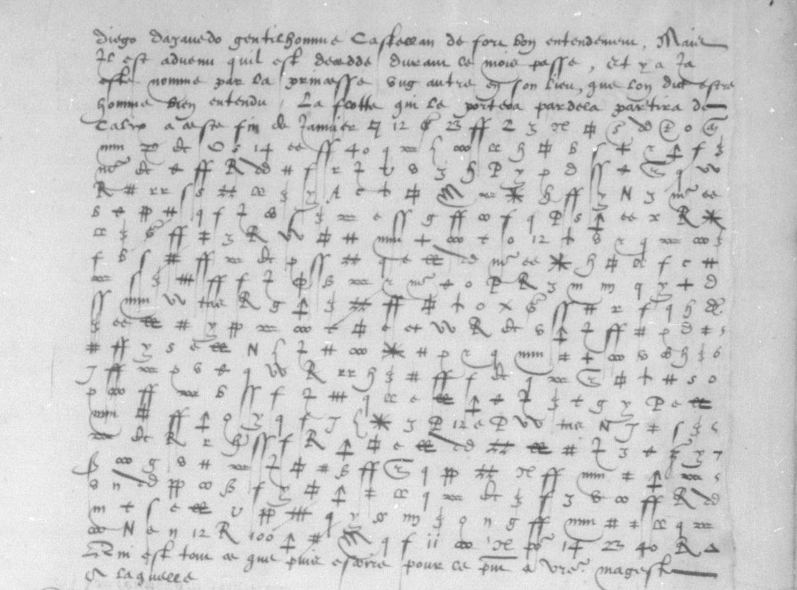

At a glanceKey from adjacent plaintext · partial (100% of the cipher)
- The letters
- Michel de Seure, Henri II’s ambassador in Lisbon, to the secretary of state de Fresne (12 December 1558) and to the king (12 and 27 December 1558). The 12 December letter to the king survives in three copies.
- Where
- Bibliothèque nationale de France, français 3151 nos. 39–41 and 43–44 (Gallica btv1b9059865k, views 72–87); catalogue item 10. No. 42 is a letter of Marshal Brissac.
- The cipher
- 118 sign types: 55 letter signs, most letters with two or three of them, 18 syllable signs, 22 word signs (portugal, perou, roy d’espaigne…), 21 nulls and a sign that cancels the one before it. The text runs on without word breaks.
- How it was deciphered
- A leaf bound with the letters holds three short deciphered paragraphs, A, B and C, matching no. 44. Robinson used them as cribs, transcribed every letter, annealed the key and corrected it sign by sign against the scans.
- What it says
- The Peru fleet’s arrival at Seville with silver, treasure unloaded in the Azores and handed to Philip’s officers, Spanish ships gathering at Málaga, Alicante and Cádiz, debts at the Medina fairs, and Seure’s own unpaid allowances.
- Still open
- One word sign with no value (once, probably vostre), one conjectural value (escuz), and 27 damaged or unidentified signs. Measured word by word on 24 October 2026, the reading of no. 39 builds coherent sentences but reads at 90.9% of its words, under the 95% a complete reading needs.
- Credit
- Key, transcription and decipherment by Angus Robinson (pull request #40, 16 October 2026). Checked here.
This page was split on 14 October 2026 from the joint entry for catalogue item 10. La Guiche’s Rome letter of 1551 and Noailles’s Venice letter of 1558 are in other ciphers, each with its own page: La Guiche to Montmorency, 1551 and Noailles to the Cardinal de Lorraine, 1558.
01 The letters
Michel de Seure, a Knight of Malta (commandeur), was Henri II’s ambassador at the Portuguese court. Five of his letters in fr. 3151 mix clear French with long cipher passages. The counts are measured here from Robinson’s transcription. A “position” is one written sign, nulls included. A “signifying” position is one that is neither a null nor cancelled.
| No. | To, date | Gallica views | Cipher positions | Given a value |
|---|---|---|---|---|
| 39 | de Fresne, 12 Dec 1558 | 72–73 | 405 | 365 of 366 |
| 40 | Henri II, 27 Dec 1558 | 74–75 | 1,474 | 1,380 of 1,385 |
| 41 | Henri II, 12 Dec 1558 | 77–78 | 1,921 | 1,792 of 1,799 |
| 43 | Henri II, 12 Dec 1558 | 81–83 | 3,622 | 3,440 of 3,464 |
| 44 | Henri II, 12 Dec 1558 (“Dupplicata”) | 85–87 | 1,983 | 1,842 of 1,843 |
Nos. 41, 43 and 44 are three copies of the letter of 12 December. Measured on the decipherment, no. 41’s three passages share 1,295, 449 and 427 letters with no. 44’s sections A, B and C. No. 43’s long passage and its postscript carry the same text again. The dates and addressees are from Robinson’s readings: some dockets disagree with the closing dates, and no. 39’s address panel names the duc de Guise. The survey of 21 September had counted six letters (nos. 39–44) and guessed at the duplicate pairs; both were wrong. No. 42 (view 79) is headed as Marshal Brissac’s letter to the king.

02 The cipher
Robinson’s key has 118 sign types. Many are letters of the secretary hand, Roman or Greek, used as cipher signs, which hid the system at first. His transcription labels name the shapes (H#, 3bar, Tarrow, beta…); KEY.svg draws each one.

- Letters: 55 signs. Most letters have two or three homophones: a is
H#,oorss, and e is3bar,fforq. - Syllables: 18 signs for 16 values: au, ce, co, con/com, de, est, et (three signs), il, le, luy, moy, on, par/per, que, qui, si.
- Words: 22 signs: argent, arme, castille, dict, dire, escuz, espaigne, faict, faire, la royne Marye, l’empereur, mais, navires, nous, Perou, Portugal, pour, roy de Portugal, roy d’Espaigne, sire, vostre, vous. A 23rd sign,
N10_4, has no value. - Nulls: 21 signs, among them the numerals 7, 12, 13, 14, 23, 30, 40 and 100. The survey of 21 September had taken these numerals for code groups. Nulls make up 499 of the 9,405 positions.
- Cancellation: the sign
trivoids the sign before it (49 positions).
03 No. 39, to de Fresne

The cipher passage of the letter to de Fresne is twenty rows. It opens on rumours of a withdrawal and asks for news of the outcome, « car nous commenceons a aprocher du temps »: Seure’s two-year posting was nearly over. The rest asks de Fresne to help recover his unpaid allowances and to speak for him to the Cardinal. Seure says he is in debt and wants to leave. Only one of the 366 signifying positions is unread: the word sign N10_4 in row 10, which Robinson proposes is vostre.
04 The letters to the king
12 December (nos. 41, 43, 44). The Peru fleet has reached Seville with silver; Robinson’s reading values it at about two million in gold and silver. More treasure was unloaded in the Azores, and the queen of Portugal has ordered it handed over to Philip’s officers. She has also lent Philip money from the young king’s treasury. Seure reports two French ships taken at Havana, the death of Don Diego de Azevedo and the naming of a new viceroy, and a spice fleet due to sail for Flanders. The money owed at the Medina fairs comes up as well: « ilz devoient huict cens mille escuz aux foires de Medina ». Of the three copies, no. 43 is the longest and the worst preserved. Its opening passage names a Portuguese, Anthoine Galean, and the death of Queen Mary (« le decez de la royne Marye »).
27 December (no. 40). So far Philip’s men have recovered only two hundred thousand escuz confiscated from a churchman, and the queen of Portugal has let Philip send armed ships to Terceira. Ships are gathering at Málaga, Alicante and Cádiz, and Genoa has made a loan. Seure has had no letters from the king for five months.
Robinson’s walkthrough gives the continuous French reading of every section, with an English translation: angusrobinson.github.io/historical-decipherment/seure.
05 How the key was recovered
The method is Robinson’s, from his summary and walkthrough.
- Cribs. A leaf with three short deciphered paragraphs, labelled A, B and C, is bound in the middle of a sentence. They overlap no. 44’s cipher sections A, B and C. He later found two more parallels. No. 43’s postscript enciphers the same text as no. 44 C, and no. 40’s enciphered passages have clear copies.
- Transcription and annealing. He transcribed all five letters as well as he could (397 rows, 9,405 positions). He then ran simulated annealing from the cribs, four runs in parallel.
- Splitting look-alikes. Annealing worked only in part, because several sets of similar signs had been taken as one. He split them by comparing the scans again and again across the whole corpus. About 230 proposed characters came down to 118 sign types.
- Held-out test. A section held back from the fitting deciphered cleanly with the final key.
Robinson reports that his AI collaborator, asked to transcribe one section, filled in signs from a parallel plaintext instead of reading the scan. About 19% of that section’s signs (68 of 360) were wrong, and he corrected them against the images.
06 Checks here
- Counts. The sign and output rows of
KEY_AND_DECRYPTION.txtgive 9,405 positions in 397 rows, as Robinson states. Of the 8,857 signifying positions, 8,819 carry a key value (99.6%). The other 38 are 28 unread signs and 10 read only from context. - Language. The project’s language models put the decipherment of every letter first as sixteenth-century French (−1.99 to −2.13 per letter, ahead of modern French).
- Statistical test. The test uses 9,367 read tokens and 121 types, scored with the 1530s French despatches model. The key’s reading scores −2.269 per letter. Random keys of the same shape score −5.41 (z 13.0), and the best key annealed onto shuffled ciphertext scores −3.65 (z 56). Verdict: pass.
- Images. Rows 1–9 of no. 39 were compared with view 72. The nulls 14, 13, 30, 12 and 100 and the syllable sign
55fall where his rows put them. - Three copies. The three copies of the 12 December letter were enciphered separately, and they decipher to the same text under one key.
07 What remains open
N10_4, once, no. 39 row 10: no value. Robinson proposes vostre, with Seure referring to himself (grade C).longs_x= escuz: conjectural, one occurrence (grade C).- 27 damaged or unidentified signs, most of them in no. 43 on views 82–83, are left unread. Ten more are given values from context only, for example [france] and [par] (grade M).
- Robinson estimates that the clerk made at least 18 errors in the 9,405 positions; for example, a p sign is written for g five times.
- Printed sources for Seure’s embassy have not been searched for these letters.
Full texts
The transcription and the decryption of every document on this page, so that the reading can be used and checked. Short files are shown here; all are in the repository.
No. 39, Lisbon, 12 Dec 1558, to Florimond Robertet, sieur de Fresne read in part
Michel de Seure, Henri II's ambassador in Portugal, to de Fresne (the address panel names the duc de Guise): one cipher passage of 20 rows. Key and decipherment by Angus Robinson (PR #40); continuous French and translation on his site.
Builds coherent sentences, but under the read bar of 95% of words read as sense (91% here); the holes are marked in the reading.
Transcription
# No. 39: rows copied from KEY_AND_DECRYPTION.txt (Angus Robinson, PR #40), split per letter on 22 Oct 2026. Sign labels as in his KEY section and KEY.svg; | separates signs. ## 39 — No. 39 https://angusrobinson.github.io/historical-decipherment/seure/decryption.html#39 VIEW 72 https://gallica.bnf.fr/ark:/12148/btv1b9059865k/f72 39--1 100|*|Hp|14|eq|inf3|13|f|8_o|7 39--2 n|z_3|ne|c3|inf2|beta|bow|eq|hash_s|brace|eqx|mm|dA|R|30|lambda|ss|ttx|ff|ii|2stem|h 39--3 o|longs|M|plus_a|dA|q|R|12|z_y|ttt|o|f|14|vb|Tarrow|zloop|lambda|ttt|o|swirl 39--4 mm|hash_s|swirl|beta|c_h|n|6_d|longs|z_y|3bar|eq|dA|z_3|ff|plus_b|cc|2stem|q|P|ee|ss 39--5 p|8_h|ne|hash_s|3bar|z_y|q|h|H#|mw|inf3|plus_b|3bar|mtail|ff|f|dA|P|mm|q|c_h 39--6 o|inf2|3bar|hash_s|9|ff|h|q|ribbon_tail|Tarrow|8_o|inf2|N|lambda|3bar|eq|vb|Hp|cc|2stem|7 39--7 s|plus_c|ff|z_y|q|h|H#|6_p|c_h|o|hash_i|beta|plus_b|R|f|3bar|eq|inf3|ff|f|*|7 39--8 plus_b|3bar|ee|ss|ttx|ff|vb|Hp|c_h|slashd|p|longs|8_o|eq|plus_a|H#|h|C_open|55|mtail 39--9 ff|mm|s|ne|f|hash_s|o|100|H#|x2|ttx|Hp|p|v|q|plus_b|6_d|Tarrow|inf3|3bar|plus_c 39--10 9|z_y|P|N10_4|ss|ttt|sleigh|H#|inf2|ff|H#|p|8_h|q|slashd|3bar|z_y|ff|vb|R|Tarrow 39--11 plaintext_x|o|f|hash_s|C_open|ss|z_3|ne|mm|vb|dA|q|eq|slashd|longs|plus_a|sleigh|lambda|o|6_p 39--12 H#|cc|m|A|c_p|tri|V|3bar|hash_i|ff|f|q|vb|plus_a|o|inf2|s|N|lambda|3bar|eq 39--13 hash_s|ff|h|ss|N|mtail|sleigh|hstem|H#|longs|z_y|8_o|cc|2stem|3bar|eq|p|Hp|plus_b|q|vb 39--14 o|Tarrow|ne|hash_i|ttx|6_p|c_h|z_3|hash_s|R|*|8_o|slashd|a|inf3|3bar|hash_i|ff|mm|q|z_3 39--15 ff|z_3|lambda|m|x2|ee|slashd|vb|R|mtail|3bar|slashd|ttx|q|h|hash_i|p|sleigh|x_r|Tarrow 39--16 longs|ff|plus_b|q|vb|ee|8_o|mm|E|slashd|3bar|plus_c|ff|f|dA|eps|mw|x2|cc|z_y 39--17 o|lambda|eqx|h|eq|sleigh|Tarrow|ff|Tarrow|plaintext_x|P|o|plus_a|8_h|3bar|slashd|q|plus_b|ttt|3bar|vb 39--18 R|ii|z_3|plaintext_x|o|f|hash_s|cc|ff|z_y|Tarrow|hash_i|hash_s|3bar|eq|fvert|mm|q|s|vb|longs|inf3 39--19 ff|4|o|sleigh|q|Tarrow|12|dA|ne|14|slashd|2stem|13|x2|lambda|ff|l_arrow|cc|f|R|7 39--20 2stem|3bar|z_y|100|plus_a|z_J|Zbar|R|tri|z_J|12|ff|12|c3|o4|bolt|N|tri|e_mirror
Decryption
# No. 39: rows copied from KEY_AND_DECRYPTION.txt (Angus Robinson, PR #40), split per letter on 22 Oct 2026. His output line for each row joined, ∅ (no output) dropped; no spaces supplied, [...] unread, [text] contextual readings, as in his file. Continuous French with translation: https://angusrobinson.github.io/historical-decipherment/seure ## 39 — No. 39 https://angusrobinson.github.io/historical-decipherment/seure/decryption.html#39 VIEW 72 https://gallica.bnf.fr/ark:/12148/btv1b9059865k/f72 39--1 dontno 39--2 zuoysinsparlentdelaretr 39--3 aictedesmansulma 39--4 nssilzdisentueritela 39--5 choseseraautrementquenel 39--6 ayesperequoyquilensoit 39--7 cemeseraplaisirdenentend 39--8 relaresolucioncarnouscom 39--9 enceonsaaprocherdutem 39--10 psque[...]amyayeacheuesesdeu 39--11 xansnousauonstenuicylap 39--12 aixpour⌫faicteienescaycequilen 39--13 seraquimyfaisoitencores 39--14 auoirplusdedoubteieneu 39--15 eulxplusdemeurericygu 39--16 iereslonguementetaupis 39--17 allernyueuxqueacheuermes 39--18 deuxansiesuisennecesit 39--19 eetayeutoutpleinde 39--20 tescest⌫este⌫
Reading
# Seure no. 39, Lisbon 1558 (BnF fr. 3151): the reading Written 23 Oct 2026 (verification 3): Angus Robinson's French reading of the whole letter, copied from his edition <https://angusrobinson.github.io/historical-decipherment/seure/readings.html> (letter 39); he contributed the key and decipherment to this repository in PR #40. Passages quoted with `>` are in cipher in the manuscript; the rest is clear. His conventions: scribal abbreviations expanded, consonantal u written v, a few diacritics added, and in the cipher passages word spaces and doubled letters added back (the cipher writes no doubled letters). `[word]` = his contextual reading, `[…]` = unread. The letter-level decryption is `no39_decryption.txt`. ## Reading Lettre du Commandeur de Seure à monsieur du Fresne, Secretaire d’estat sous le regne du Roy Henry second, estant pour lors son ambassadeur en Portugal. Monseigneur, Je ne vous feray longue lettre, d’aultant que pourrez veoir par celle que J’escriptz au Roy ce qui se passe pardeça. Je vous escripviz dernierement par ung nommé Anthoine Galuan, courrier Portugais, et peu paravant J’avois faict le mesme, me resiouissant grandement de l’honneur que avez receu de sa Majesté d’avoir succeddé à feu Monsieur de Marchaumont, mon bon seigneur et amy. Lors Galuan fist assez de difficulté de retourner [en France]. Toutesfoys J’estime [qu’il] seroit allé jusques à vous. Je sçay que au temps [qu’il] partit noz voisins tenoient la [paix] pour faicte. Je n’ay eu nulles nouvelles de vous depuis le retour de [Jeannoy], comme Je n’ay encores du Roy. Vray est que J’ay bien entendu que l’on m’a escript par ung qui n’est encores [venu], lequel J’actends avec grande devotion et le sçavoir de voz bonnes no[uve]lles et de celles de mon seigneur. J’actends avec grande devotion quelque advis de ce que vous faictz. Toutesfoys Je demeure à estimer [veu] la façon > dont noz voysins parlent de la retraicte des mansulmans s’ilz disent verité la chose sera autrement que ne l’ay > esperé quoy qu’il en soit ce me sera plaisir d’entendre la resolucion car nous commenceons à approcher du temps que > [vostre] amy aye achevé ses deux ans > nous avons tenu icy la paix pour faicte je ne sçay ce qu’il en sera qui my faisoit encores avoir plus de doubte je > ne veulx plus demeurer icy guieres longuement et au pis aller n’y veux que achever mes deux ans je suis en > necessité et ay eu tout plein dettes cest esté J’escriptz à la [Royne] [qu’elle] poursuive davantaige l’assigna[tion] de mes estatz de ceste Cour, qui demeura le [xx]e d’avril dernier, a ces[…] c[on]signé à Condé, affin que Je ne tombe trop [necessiteux], Je vous supplye bien humblement luy ayder à la recouvrer, et luy faire faveur à l’endroict de Monseigneur le Cardinal, a qui J’en escriptz, et par tout où avez [credit]. Comme [savez], dont Dieu vous lou[…] de vous m’obligerez de plus en plus à vous faire humble servi[ce]. J’envoyeray cest hyver ung de[s] myens pardela affin de faire recouvrer quelque parties extraordinaires que J’ay faictes en ceste charge, sans [celles] [de] s[…]me aprés [guerre], et par mesme moyen Je envoyray quelque chose de beau et bien nouveau à Monseigneur le Cardinal, suivant ce que m’avez [conseillé]. et deux marbres de […]. Je n’ay sceu congnoistre [s’il est] allé pardela auecque [le] Sieur […] ou envoyé, qui fu[st] [si] beau ou si desdaigneux de [ne] me vouloir faire sçavoir son allee. Pourquoy vous supplye me faire tant de bien par la premiere depesche que l’on fera de moy escrire ung mot affin que vous […] [l’asseurance] à cognoistre […] bonnes h[…]eurs. C’est l’endroict où Je feray fin à la [presente], aprés avoir rendu mes treshumbles et affectionnees [recommendations] à vostre bonne grace, en priant nostre seigneur Monseigneur, vous donner en santé tresbonne vye longue. De Lisbonne le [xij] jour de decembre 1558. Vostre humble serviteur et certain amy, Le chevalier de Seure. Monseigneur, Monseigneur le duc de Guise, Pair et Grand Chambellan de France. […] le Mareschal de Brissac, du [xxvj]me novembre 1558.
Translation
# Seure no. 39, Lisbon 1558: English translation Angus Robinson's English, copied 23 Oct 2026 from his edition (letter 39); `>` = enciphered in the manuscript. ## Translation Letter from the Commander de Seure to Monsieur du Fresne, Secretary of State under King Henry II, while Seure was his ambassador in Portugal. My lord, I shall not write you a long letter, since you will be able to see from the one I am writing to the king what is happening here. I wrote to you recently through a man named Antoine Galuan, a Portuguese courier, and shortly before that I had done the same, rejoicing greatly at the honour you have received from His Majesty of succeeding the late Monsieur de Marchaumont, my good lord and friend. Galuan then made a good deal of difficulty about returning [to France]. Nevertheless I believe [that he] would have gone on as far as you. I know that, at the time [when he] left, our neighbours regarded the [peace] as concluded. I have had no news at all from you since the return of [Jeannoy], just as I have none yet from the king. It is true that I have indeed heard that a letter has been sent to me through someone who has not yet [arrived]; I await him with great devotion, and to hear your good news and that of my lord. I await with great devotion some word about what you are doing. Nevertheless I still have to assess it, [given] the manner > in which our neighbours speak of the withdrawal of the Muslims. If they are telling the truth, things will turn out > otherwise than I had hoped. Be that as it may, I shall be glad to hear the outcome, for we are beginning to > approach the time when [your] friend will have completed his two years. > We have regarded the peace here as settled; I do not know how it will turn out, which made me still more doubtful. > I do not wish to remain here very much longer, and at worst I want only to complete my two years. I am in need and > ran up a great many debts this summer. I am writing to the [queen] to press further for the [assignment] of my allowances from this court, which remained [unpaid] last [20th] April, […] [assigned] at Condé, so that I do not fall into too great [need]. I very humbly beg you to help recover them, and to put in a good word with my lord the Cardinal, to whom I am writing about it, and wherever you have [influence]. As [you know]—may God [reward] you for it—you will bind me ever more closely to your humble [service]. I shall send one of my people over there this winter to recover some extraordinary expenses I have incurred in this office, not counting [those incurred] […] after [the war]. By the same means I shall send something beautiful and quite new to my lord the Cardinal, following what you have [advised] me. and two pieces of marble from […]. I have not been able to find out [whether he has] gone over there with [the] sieur […], or [was] sent, who [was] [so] grand or so disdainful as [not] to want to let me know of his departure. Therefore I beg you to do me the kindness, by the first dispatch that is sent, of writing me a word, so that you […] [may be assured of] […] [goodwill]. This is where I shall end the [present letter], after paying my most humble and affectionate [respects] to your good grace, while praying Our Lord to grant you, my lord, health and a very good, long life. Lisbon, [12] December 1558. Your humble servant and faithful friend, the Chevalier de Seure. My lord, the Duke of Guise, Peer and Grand Chamberlain of France. […] the Maréchal de Brissac, [26] November 1558.
No. 40, Lisbon, 27 Dec 1558, to Henri II
Seure to Henri II: opening, continuation and postscript in cipher, a different text from the 12 Dec letter; its enciphered passages have surviving clear copies (Robinson). The letters' themes are Spanish treasure from Peru and the Indies fleet, the money held at the Medina fairs, Queen Mary's death and Philip II, the Portuguese court and Seure's own debts.
Transcription
# No. 40: rows copied from KEY_AND_DECRYPTION.txt (Angus Robinson, PR #40), split per letter on 22 Oct 2026. Sign labels as in his KEY section and KEY.svg; | separates signs. ## 40O — No. 40, opening https://angusrobinson.github.io/historical-decipherment/seure/decryption.html#40O VIEW 74 https://gallica.bnf.fr/ark:/12148/btv1b9059865k/f74 40O--1 beta|Zbar|z_J|swirl|s|c3|P|bow|hash_i|l_arrow|slashd|fvert|hash_s|14|P|bolt|z_y|o4|ss|7|9|six|h|100|ff|bolt 40O--2 vb|ii|q|eq|M|2stem|23|rho|f|3bar|7|eq|B_cross|inf3|6_p|ff|Tarrow|H#|dA|plus_b|o|zloop|x2|q|ttx|P|R|six 40O--3 z_3|m|s|f|hash_s|plus_c|longs|eqx|z_y|Zbar|plus_a|slashd|9|n|N|z_J|ne|cc|ff|eq|2stem|o|Tarrow|mm|x_r|8_h|8_o|7 40O--4 ttt|q|R|E|ee|hash_i|vb|3bar|eqx|hash_s|P|c_h|n|Zbar|Hp|f|inf3|x_p|hstem|longs|vb|P|n|lambda|ss|h|ne 40O--5 Zbar|sleigh|eq|ff|R|96|H#|x2|q|plus_b|mtail|hash_i|hash_s|eps|o|p|8_o|ttx|R|mw|h|Hp|swirl|inf2|9|v 40O--6 cc|ee|hash_i|l_arrow|6_p|3bar|hash_s|R|x2|ne|z_3|8_o|longs|plus_b|ff|mm|slashd|Hp|sleigh|q|ttx|3bar|eq|c_h|cc 40O--7 vb|eqx|R|ee|H#|dA|ff|h|M|s|plus_b|o|tae|ss|ttx|ttt|q|n|phi|8_o|c_p|hash_i|plus_a|longs|3bar 40O--8 h|z_y|A|h|ff|p|Hp|Tarrow|plus_b|q|ttx|eqx|y|p_i|N|inf2|H#|z_J|3bar|ee|o|cc|hash_s|ff|f|9 40O--9 ss|z_y|H#|eq|dA|4|6_p|z_3|hash_s|vb|o|mm|s|R|p|8_h|ss|hash_s|2stem|longs|ff|plus_b|eps|8_o|h 40O--10 *|ne|f|q|h|lambda|ss|R|hash_s|Tarrow|z_y|o|vb|Hp|mm|x2|c_h|o|hash_i|beta|ttx|P|eqx|vb|x_r|q|eq 40O--11 hash_s|R|cherries|longs|3bar|eq|R|s|9|H#|inf2|vb|2stem|h|ne|Tarrow|ff|f|inf3|a|longs|q|mm|z_J|ttx|ss|mm|E 40O--12 3bar|55|ttt|ff|H#|c_h|o|slashd|q|plus_b|cc|dA|3bar|rho|z_J|plus_a|ss|plus_b|A|h|hash_i|ff|eq|hash_s|eqx|z_y|R 40O--13 hstem|z_3|mm|p|2stem|n|ttx|8_o|sleigh|vb|R|ii|96|eq|q|eqx|Tarrow|hash_s|3bar|eq|inf3|brace|mtail|longs|z_y|rho|n 40O--14 inf2|Hp|f|dA|ff|mm|z_3|ne|sleigh|q|ss|inf3|ne|Tarrow|2stem|3bar|6_d|cc|ee|hash_i|E|ff|eq|s|*|hash_i 40O--15 q|Tarrow|z_3|3bar|longs|c_h|ff|N|lambda|n|mm|q|eqx|ttx|3bar|plus_a|ne|slashd|h|ff|f|inf3|x_p|plus_c|q|hash_i|z_J|bolt 40O--16 longs|ttt|3bar|N|c_h|n|f|ff|c_p|q|plus_b|8_o|eq|dA|cherries|hash_i|3bar|eq|ss|cc|z_y|ff|plus_c|q|f|2stem|R|bolt 40O--17 Hp|tri|x2|Tarrow|longs|hash_s|ttt|3bar|hash_s|y|ff|Zbar|R|ttx|eq|cc|q|h|3bar|vb|R|9|ff|plus_a|v|q|z_y|23 ## 40M — No. 40, continuation https://angusrobinson.github.io/historical-decipherment/seure/decryption.html#40M VIEW 75 https://gallica.bnf.fr/ark:/12148/btv1b9059865k/f75 40M--1 longs|ss|inf2|q|Tarrow|mm|8_o|z_3|3bar|c_h|eqx|vb|N|c_h|n|hstem|ne|eq|2stem|slashd|f|3bar|ttx|ff|inf3|q 40M--2 Tarrow|3bar|R|tae|H#|c3|mtail|o|eqx|E|ss|H#|lambda|hash_i|M|p|o|mm|inf3|h|q|dA|plus_a|ss 40M--3 longs|plaintext_x|phi|6_d|cc|z_y|3bar|f|dA|P|p|z_J|A|ff|eq|z_3|ne|sleigh|q|plus_b|3bar|eq|plus_a|hash_i|p|cc|ee 40M--4 eqx|4|mm|H#|23|6_p|c_h|ff|z_y|R|vb|hash_s|8_o|c_h|*|o|2stem|n|P|eqx|mtail|ss|h|N|z_y|R 40M--5 inf3|H#|ttx|cc|c_p|q|N|z_J|ne|h|*|Hp|eq|3bar|A|slashd|hash_i|hash_s|plus_b|8_o|inf2|V|eqx|Tarrow|q 40M--6 ttx|A|sleigh|q|eq|Tarrow|8_o|sleigh|3bar|plus_b|rho|6_d|8_o|hash_i|2stem|brace|inf3|longs|ttx|a|cc|ff|mm|inf3|ne|z_y 40M--7 dA|qtail|ttt|q|z_y|mtail|3bar|vb|beta|c_h|eq|ff|lambda|z_J|R|hash_s|longs|H#|Hp|plus_b|o|f|eq|ss|x2 40M--8 H#|hash_s|z_J|q|o|z_y|beta|3bar|x_r|ff|55|mtail|q|rho|n|9|3bar|eq|z_y|ne|hash_i|3bar|eq|dA|6_d|Tarrow|plus_b 40M--9 o|mm|inf3|plus_a|z_J|8_h|inf2|slashd|ff|ttx|rho|n|6_p|ss|h|eqx|eq|2stem|mw|vb|beta|R|f|Tarrow 40M--10 ne|sleigh|q|h|P|c_h|P|12|hash_s|z_y|8_o|c_h|M|*|o|inf3|n|H#|lambda|ss|E|ne|ee|eqx|?M10.21c 40M--11 3bar|A|plus_b|H#|hstem|ttx|ff|vb|p|v|cc|h|lambda|H#|x_r|o|plus_b|eq|hash_i|z_y|8_o|f|rho|n|ne|mm 40M--12 2stem|longs|ss|hash_s|H#|inf3|cc|z_y|V|eqx|vb|8_h|Tarrow|longs|plus_a|2stem|s|mm|hash_s|plus_c|cc|eqx|q 40M--13 p|z_3|n|N|c_h|n|R|slashd|ne|hash_i|ff|f|inf3|q|vb|c_p|ne|sleigh|ttx|ff|hash_s|R|ttt|q|6_d|cc 40M--14 fvert|mm|o|eps|*|H#|slashd|o|f|dA|ss|E|longs|3bar|Hp|eq|2stem|V|Tarrow|eq|x_r|brace|inf3|?M14.22b 40M--15 R|beta|m|s|mm|hash_s|mtail|longs|c_h|eqx|ff|vb|plus_a|slashd|n|H#|Tarrow|q|p|P|hash_s|z_3|f|E 40M--16 x_r|3bar|eq|ff|Tarrow|ne|sleigh|vb|N|eqx|z_3|plus_b|6_d|ne|hash_i|a|2stem|lambda|longs|slashd|h|q|plus_b|3bar|?M16.23b 40M--17 c_p|ee|ss|eq|*|ttx|ff|hash_s|H#|R|Tarrow|plaintext_x|9|o|inf2|ttt|q|mm|vb|*|ne|f|cc|eqx 40M--18 R|ttx|eq|hash_i|3bar|plus_b|z_J|ff|eq|s|L_below|z_y|R|plus_c|o|h|vb|6_p|plus_b|8_o|p|8_h|H#|cc|eq 40M--19 eqx|x_r|q|f|slashd|Hp|inf2|hash_s|sleigh|ss|x2|h|ne|hstem|hash_i|plus_a|inf3|R|6_d|longs|m|8_h|Tarrow|cc|2stem 40M--20 dA|A|s|eq|2stem|rho|n|z_y|ne|eq|inf3|q|eq|6_p|plus_b|ne|8_o|tri|x2|Hp|n|R|eq|ff|f|Tarrow|?M20.25c 40M--21 sleigh|q|ttx|brace|c_h|ss|plus_b|l_arrow|q|6_d|ne|3bar|mm|c_p|c_h|H#|eq|*|plus_b|23|ff|vb|hash_s|Tarrow|plus_b 40M--22 eqx|z_y|tae|N|R|z_3|ne|hash_i|q|eq|inf3|9|8_o|ttx|dA|3bar|h|ca|*|ne|eq|longs|hash_i|tri|Tarrow 40M--23 H#|eq|R|Tarrow|ff|M|x_r|o|z_J|plus_c|Hp|plus_b|2stem|N|z_J|Hp|cc|inf3|9|ttx|q|beta|6_d|3bar|eq 40M--24 inf3|*|ma|phi|8_h|ne|ttt|ff|R|z_y|3bar|ttx|slashd|cc|s|lambda|ne|eq|y|P|eqx|55|f 40M--25 q|dA|ss|cherries|eqx|R|castille_code|ee|z_J|mw|hash_s|beta|R|s|hash_i|ff|mm|q|f|H#|inf2|3bar|eq 40M--26 plus_a|ne|h|ff|hash_s|Zbar|plus_b|hash_i|14|q|mm|40|vb|6_d|c3|ss|23|hash_s|z_3|bolt|ttx|3bar|?M26.22c 40M--27 tri|100|c3|30|13|fvert|l_arrow|R|tri|12|ii ## 40R — No. 40, postscript https://angusrobinson.github.io/historical-decipherment/seure/decryption.html#40R VIEW 75 https://gallica.bnf.fr/ark:/12148/btv1b9059865k/f75 40R--1 hash_i|ff|ne|o4|Tarrow|a|c3|longs|8_o|fvert|sleigh|hash_s|ss|B_flat|vbo|z_y|P|ca|lambda|H#|cc|z_y|o|9|ee|z_3|hash_s|R|ribbon_tail|slashd|ss|2stem|plus_b|q|s|eq 40R--2 z_y|ttt|hash_i|eqx|ff|vb|p|Tarrow|n|q|eq|ne|h|bow|tri|brace|inf3|z_J|H#|ttt|3bar|eq|dA|mw|plus_b|ne|sleigh|9|8_h|longs|lambda|cc|6_p|ff 40R--3 phi|mw|hash_s|beta|P|c_h|eqx|ee|H#|hash_i|z_y|o|ss|s|P|c_h|ne|mm|y|A|v|q|ttx|hash_i|2stem|longs|3bar|h|R|hash_s|ne|f|x2|ss 40R--4 inf3|plus_b|hash_i|ttt|ne|inf2|eq|ff|slashd|eq|E|hstem|hash_i|c_h|n|a|ss|z_y|dA|H#|ttx|6_d|P|6+tick|o|*|Tarrow|Hp|z_3|ss|H# 40R--5 vb|o|plus_c|ne|h|2stem|ss|z_3|ne|hash_i|plus_b|ff|slashd|q|eq|ee|H#|Tarrow|hash_i|c_h|eqx|6_d|mw|E|Tarrow|hash_s|inf3|3bar|N|o|dA|h|q 40R--6 longs|n|q|H#|eq|z_y|vb|slashd|h|eqx|P|c_h|6_p|ss|2stem|h|hash_i|ttt|ne|sleigh|f|3bar|dA|Hp|z_3|inf3|ff|z_y|c_p|8_o|inf2|hash_s|eqx 40R--7 vb|ne|hstem|cc|p|longs|q|h|hash_s|6_d|z_3|plus_b|8_o|sleigh|x2|8_h|cc|lambda|hash_i|9|3bar|vb|ne|mm|2stem|ttt|longs|z_y|ee|o|plus_c|H# 40R--8 cc|eq|4|hash_s|ne|f|inf3|ss|6_p|ttx|ff|vb|H#|inf3|h|Hp|Tarrow|q|plus_b|p_i|R|hash_s|z_3|z_y|phi|*|o|slashd|ss|eq|2stem|7 40R--9 o|cc|E|3bar|c_p|ne|mm|inf3|H#|x2|ttx|z_J|ff|h|Tarrow|eq|q|x_r|plus_b|ss|f|R|hstem|lambda|ne|inf3|3bar|plus_a|v|H#|h 40R--10 E|ff|R|ttt|ss|plus_b|p|8_h|H#|mm|6_d|longs|vb|q|A|o|c_h|eqx|h|mw|perou_code|ee|ss|P|eqx|brace|dA|cc|ttx 40R--11 H#|M|o|lambda|14|ss|hstem|ii|hash_i|eq|13|R|bolt|c_p|ff|100|cherries|Tarrow|23|ttx|longs|c3|q|plus_b|bow|bolt|P|tri|12 40R--12 V|tri|12|ii|e_mirror|100
Decryption
# No. 40: rows copied from KEY_AND_DECRYPTION.txt (Angus Robinson, PR #40), split per letter on 22 Oct 2026. His output line for each row joined, ∅ (no output) dropped; no spaces supplied, [...] unread, [text] contextual readings, as in his file. Continuous French with translation: https://angusrobinson.github.io/historical-decipherment/seure ## 40O — No. 40, opening https://angusrobinson.github.io/historical-decipherment/seure/decryption.html#40O VIEW 74 https://gallica.bnf.fr/ark:/12148/btv1b9059865k/f74 40O--1 siestcequeiusquesapre 40O--2 sentilnenontpeuatraperquede 40O--3 uxcensmilescupzquiestoientaungho 40O--4 medegliselesquelzontconfisquezlaro 40O--5 ynedeportugalapermisetacordeauroyph 40O--6 ilipesdepouoirenuoyerenli 40O--7 sledelaterceranauiresarmezetoficie 40O--8 rspourrecourerle[s]argentquiyaestelaisenp 40O--9 asantetpussancedechastieretor 40O--10 donerladesusasonplaisirquelesgen 40O--11 sdebiendecepaystrouentbienestrang 40O--12 ecomealaueriteilestcarpourrienslesde 40O--13 functzroysdeportugalneleusentpermisilz 40O--14 yontenuoyeatoutediligencedi 40O--15 euueilequilznelerecourentcommeiest 40O--16 imequilzneferontbienaisementde 40O--17 ⌫puismesdictedernieresdepeches ## 40M — No. 40, continuation https://angusrobinson.github.io/historical-decipherment/seure/decryption.html#40M VIEW 75 https://gallica.bnf.fr/ark:/12148/btv1b9059865k/f75 40M--1 iayeunouellesquilzfontunerete 40M--2 uedenauiresamalegaalicantretca 40M--3 ixetdisentquecestpourenuoyerencicil 40M--4 leetnaplesdessoldatzquelemarquisde 40M--5 tarifequiestordonepouruisroyfaictleue 40M--6 rpouryenuoyerildoitpartirbientos 40M--7 tluymesmessilnelestdesiaorannap 40M--8 asesteassiegecomeilzpensoientdur 40M--9 antcesthyuerilzparlentaussidenu 40M--10 oyerquelquessoldatzalagolle[t] 40M--11 epourrafreschirlagarnisonilzon 40M--12 tiasatisfaictleshuictcensmilee 40M--13 cuzquilzdeuoientesfoyresdemedi 40M--14 naetdauantagieontfaictungpart[y] 40M--15 desixcensmilleescuzauecquesung 40M--16 geneuoysquileurdoibtliurere[n] 40M--17 flandresadeuxpaymensdonile 40M--18 dernierestencemoysdemarsprochain 40M--19 legenuoysyaprofictdedixhuit 40M--20 tpourcentilzsontenpro⌫pozdenenu[o] 40M--21 yerparlaredoenflandressur 40M--22 lesnauiresquideuoientporterlaroynemaryedoni⌫u 40M--23 andeuegaestmortquiestoitpresiden 40M--24 tdespaigneethomedeseruicelondictquelecon 40M--25 etabledecastillelestaussideceienenayen 40M--26 coresriensdasure 40M--27 ⌫⌫ ## 40R — No. 40, postscript https://angusrobinson.github.io/historical-decipherment/seure/decryption.html#40R VIEW 75 https://gallica.bnf.fr/ark:/12148/btv1b9059865k/f75 40R--1 ieoubioysavousdiresquelaroynemaryelaisaplusdequatrecen 40R--2 smileescuzenor⌫partestamentauroyphilipe 40R--3 etaussiquellelaisaacequelondictpourheritierdesonpa 40R--4 trimoyneungfilzbastardquelempereuraduouaa 40R--5 samortauoireuenlauilledaugustequiatre 40R--6 izeanssurlequelpatrimoynetoutesfoysle 40R--7 soficiersduroyphilipesontmislama 40R--8 inetsontapresatrouerargentdesusetdauant 40R--9 aigefontapresterunegrandeflotechar 40R--10 gedemarchandisepourallerauperoulaquelepartir 40R--11 aalafindefeburier⌫ 40R--12 ⌫
Reading
# Seure no. 40, Lisbon 1558 (BnF fr. 3151): the reading Written 23 Oct 2026 (verification 3): Angus Robinson's French reading of the whole letter, copied from his edition <https://angusrobinson.github.io/historical-decipherment/seure/readings.html> (letter 40); he contributed the key and decipherment to this repository in PR #40. Passages quoted with `>` are in cipher in the manuscript; the rest is clear. His conventions: scribal abbreviations expanded, consonantal u written v, a few diacritics added, and in the cipher passages word spaces and doubled letters added back (the cipher writes no doubled letters). `[word]` = his contextual reading, `[…]` = unread. The letter-level decryption is `no40_decryption.txt`. ## Reading Lettre du mesme Commandeur de Seure au Roy Henry second, estant pour lors son ambassadeur en Portugal. Sire, Je vous ay escript le douziesme de ce moys par voye de Lyon et Bourdeaulx la grande joye que noz voisins de Seville faisoient de l’arrivee de la flotte du Perou, laquelle y arriva dès la fin d’octobre, et la somme d’argent registree qu’elle avoit apportee. Mais pourautant que ces voyes de vous escripre sont aussi incertaines, et que ne sçay bonnement si ce que vous ay escript au passé par diverses depesches est allé jusques à vous, Je n’ay voulu faillir en redire ung mot à vostre majesté par ceste depesche, laquelle va par voye de Lyon, affin qu’elle puisse estre advertie de tout ce qui s’offre en cest endroict. Ladicte flotte estoit de vingt deux navires dont les quatre estoient armez en guerre, et le demeurant estoient toutes sortes de navires marchans. Lesdictz quatre navires ont apporté huict cens mille escuz pour le Roy Philippes, qui est du revenu de ses droictz, de ces autres ung million d’argent registré pour les particuliers ou marchans, et aultres quatre vingtz mille pour les deffunctz, et pour troys cens mille escuz de cochenille et d’estoffe, et oultre ce ont desbarqué en sauluete es Isles des Assores, où par leur bon heure ilz ne trouverent plus les navires qui estoient allez à leur escorte, parce qu’ilz s’estoient retirez à Caliz desesperez de l’avoir pour ceste annee, prés d’ung million d’or, dont la pluspart appartient à ce que l’on dict au Visroy du Perou, qui est tout ce qu’il en a peu venir à ma cognoissance. L’on m’escript que oultre ces sommes qui sont registrees, dont les officiers du Roy Philippe se sont saisiz, il y en avoit encores une bonne somme, laquelle ne l’estoit, que les marchans ont faict cacher en secret et au desceu des officiers des Indes parmy les sucres et autres sortes marchandises, laquelle peult à peu prés valloir quasi autant que la registree. Les officiers de Seville ont faict une merveilleuse dilligence là dessus. > si est ce que jusques a present il n’en ont peu attrapper que deux cens mil escupz qui estoient à ung homme > d’eglise lesquelz ont confisquez la royne de portugal a permis et accordé au roy philippes de pouvoir envoyer en > l’isle de la tercera navires armez et officiers pour recouvrer les argent qui y a esté lais en passant et pussance > de chastier et ordonner là dessus à son plaisir que les gens de bien de ce pays trouvent bien estrange comme à la > verité il est car pour riens les deffunctz roys de portugal ne l’eussent permis ilz y ont envoyé à toute dilligence > dieu veille qu’ilz ne le recouvrent comme j’estime qu’ilz ne feront bien aisement > depuis mes dicte dernieres depeches j’ay eu nouvelles qu’ilz font une reteue de navires à malega alicantr et caix > et disent que cest pour envoyer en cicille et naples des soldatz que le marquis de tariffe qui est ordonné pour > visroy faict lever pour y envoyer il doit partir bien tost luy mesmes s’il ne l’est desja oran n’a pas esté assiegé > comme ilz pensoient durant cest hyver ilz parlent aussi d’envoyer quelques soldatz à la gollete pour raffreschir la > garnison > ilz ont ja satisfaict les huict cens mil eecuz qu’ilz devoient es foyres de medina et davantagie ont faict ung > party de six cens mille escuz avecques ung genevoys qui leur doibt livrer en flandres à deux paymens doni le > dernier est en ce moys de mars prochain le genvoys y a profict de dix huitt pour cent ilz sont en propoz den > envoyer par laredo en flandres sur les navires qui devoient porter la royne marye > don juan de vega est mort qui estoit president d’espaigne et homme de service l’on dict que le conetable de > castille l’est aussi de ce je n’en ay encores riens d’assuré Il y a cinq moys que n’ay eu lettres de vous, qui est tout ce que vous puis escrire. Sire, Je prie nostre seigneur vous donner en parfaicte santé tresheureuse et treslongue vye. De Lisbonne le xxvijme jour de decembre 1558. > je oubioys à vous dires que la royne marye laissa plus de quatre cens mille escuz en or par testament au roy > philippe et aussi qu’elle laissa à ce que l’on dict pour heritier de son patrimoyne ung filz bastard que l’empereur > advoua à sa mort avoir eu en la ville d’auguste qui a treize ans sur lequel patrimoyne toutesfoys les officiers du > roy philippes ont mis la main et sont aprés à trouver argent dessus et davantaige font apprester une grande flotte > chargé de marchandise pour aller au perou laquelle partira à la fin de febvrier Vostre treshumble et tresobeissant serviteur et subiect, Le chevalier de Seure. Si est ce que Jusques a present il n’en ont peu attrapper que deux Cens mil escuz qui estoient à ung homme desglise lesquelz sont confisquez La Royne de portugal a permis et accordé au Roy Philippes de pouvoir envoyer es Isles de la Tercera navires armez et officiers pour recouvrer largent qui y a esté laissé en passant et puissance de chastier et ordonner là dessus à son plaisir ce que les gens de bien de ce pays trouvent bien estrange Comme à la verité il est Car pour Riens les deffunctz Roys de portugal ne leussent permis Ilz y ont envoyé à toute dilligence Dieu vueille quilz ne le recouvrent que iestime quilz ne feront bien aisement Depuis mes dernieres depesches Iay eu nouvelles quilz font une Retenue de navires à malaga alicante et caliz et disent que cest pour envoyer en Cicelle et Naples des soldatz que le marquis de Tariffe qui y est ordonné pour Visroy faict lever pour y envoyer Il doibt partir bien tost luy mesmes sil ne lest desia Oran na pas esté assiegé que ilz pensoient durant cest hyver Ilz parlent aussi denvoyer quelques soldatz à la golette pour raffreschir la garnison Ilz ont Ia satisfaict les huict cens mil escuz quilz debvoient en foire de medina et davantaige ont faict ung party de six cens mil escuz avecques ung genevoys qui les doibt livrer en flandres à deux payementz dont le dernier est en ce moys de mars prochain le genevoys a prouffict de xviij pour cent Ilz sont en propos den envoyer par Laredo en flandres sur les navires qui debvoient porter la Royne Marye Don Iuan de Vega est mort qui estoit president despaigne et homme de service Lon dict que le Connestable de Castilla lest aussi De ce Ie nen ay encores Rien dassuré Ie oublioys à vous dire que la Royne marye laissa plus de quatre cens mil escuz en or par testament au Roy Philippes et aussi quelle laissa à ce que lon dict pour heritier de son patrimoine Ung filz bastard que lempereur advoua a sa mort avoir eu en la ville dauguste qui a xiij ans sur lequel patrimoine toutesfoys les officiers du Roy Philippes ont mys la main et sont aprés à trouver argent dessus et davantaige font apprester une grande flotte chargee de marchandise[s] pour aller au Perou laquelle partira à la fin de febvrier Monsieur, Monsieur du Fresne conseiller du Roy et secretaire de ses finances. Chevalier de Seure, du xxvijme decembre 1558.
Translation
# Seure no. 40, Lisbon 1558: English translation Angus Robinson's English, copied 23 Oct 2026 from his edition (letter 40); `>` = enciphered in the manuscript. ## Translation Letter from the same Commander de Seure to King Henry II, while he was his ambassador in Portugal. Sire, I wrote to you on the twelfth of this month by way of Lyon and Bordeaux of the great joy among our neighbours in Seville at the arrival of the fleet from Peru, which arrived there at the end of October, and of the registered money it had brought. But because these routes for writing to you are so uncertain, and I do not really know whether what I have written in my various earlier dispatches has reached you, I did not wish to fail to repeat a word about it to Your Majesty in this dispatch, which goes by way of Lyon, so that you may be informed of everything that occurs here. The fleet consisted of twenty-two ships: four were armed for war and the rest were merchant ships of every kind. Those four ships brought eight hundred thousand écus for King Philip, from the revenue of his rights; of the others, a million in registered silver for private persons or merchants; another eighty thousand for the deceased; and three hundred thousand écus' worth of cochineal and fabrics. Besides this they unloaded safely in the Azores, where by their good luck they no longer found the ships that had gone out to escort them (for these had withdrawn to Cádiz, despairing of meeting it this year), nearly a million in gold, most of which is said to belong to the Viceroy of Peru. That is all that has come to my knowledge. I am told that, beyond these registered sums, which King Philip's officers have seized, there was still a good sum which was not [registered], which the merchants had hidden in secret, without the knowledge of the officers of the Indies, among the sugar and other kinds of merchandise; it may be worth very nearly as much as the registered money. The officers of Seville have been remarkably diligent about it. > Nevertheless, up to the present they have been able to get hold of only two hundred thousand écus belonging to a > churchman, which they have confiscated. The Queen of Portugal has permitted and agreed that King Philip may send > armed ships and officers to the island of Terceira to recover the money left there in passing, with power to punish > and make arrangements concerning it as he pleases. The honourable people of this country find this very strange, as > indeed it is, for the late kings of Portugal would never have allowed it on any account. They have sent there with > all diligence. God grant that they do not recover it, as I think they will not do so very easily. > Since my last dispatches I have had news that they are assembling ships at Málaga, Alicante and Cádiz, and say that > this is to send to Sicily and Naples soldiers whom the Marquis of Tarifa, who has been appointed viceroy there, is > having raised to send out. He himself is to leave very soon, if he has not already done so. Oran has not been > besieged, as they expected it would be during this winter. They also speak of sending some soldiers to La Goleta to > reinforce the garrison. > They have already paid the eight hundred thousand écus they owed at the fairs of Medina, and have also made an > agreement for six hundred thousand écus with a Genoese who is to deliver it to them in Flanders in two instalments, > the last falling due next March. The Genoese makes a profit of eighteen per cent on it. They propose to send it > from Laredo to Flanders on the ships which were to carry Queen Mary. > Don Juan de Vega has died, who was president in Spain and a man of service. It is said that the Constable of > Castile has also died. Of this I have as yet no certain information. I have had no letters from you for five months. That is all I can write to you. Sire, I pray that Our Lord may grant you, in perfect health, a very happy and very long life. Lisbon, 27 December 1558. > I forgot to tell you that Queen Mary left more than four hundred thousand écus in gold to King Philip by her will, > and also that, it is said, she made heir to her patrimonial property a bastard son whom the emperor acknowledged at > his death as a son he had had in the city of Augsburg, who is thirteen years old. King Philip’s officers have > nevertheless laid hands on that property and are seeking to raise money upon it. They are also preparing a large > fleet loaded with merchandise to go to Peru, which will leave at the end of February. Your most humble and most obedient servant and subject, the Chevalier de Seure. Nevertheless, up to the present they have been able to lay hands on only two hundred thousand écus which belonged to a churchman and which have been confiscated. The Queen of Portugal has allowed and agreed that King Philip may send armed ships and officers to the islands of Terceira to recover the money left there in passing, with authority to punish and arrange matters there as he pleases. Honourable people in this country find this very strange, as indeed it is: the deceased kings of Portugal would never have allowed it for anything. They have sent there with all haste. May God grant that they do not recover it, for I judge that they will not do so very easily. Since my last dispatches I have had news that they are assembling a gathering of ships at Málaga, Alicante and Cádiz. They say it is to send soldiers to Sicily (Cicelle) and Naples, whom the Marquis of Tariffe, appointed viceroy there, is raising for that purpose. He is to leave very soon himself, if he has not already done so. Oran has not been besieged as they had thought it would be during this winter. They also speak of sending some soldiers to La Goleta to reinforce the garrison. They have already satisfied the eight hundred thousand écus they owed at the fair of Medina. They have also made a financial agreement for six hundred thousand écus with a Genoese who is to deliver it in Flanders in two instalments. The last is due this coming March. The Genoese makes a profit of eighteen per cent. They intend to send it to Flanders through Laredo on the ships which were to carry Queen Mary. Don Juan de Vega has died. He was president [of the council] of Spain and a man of service. It is said that the Constable of Castile has died too. I have as yet no certain news of this. I forgot to tell you that Queen Mary left more than four hundred thousand écus in gold to King Philip by will, and also that she is said to have made heir to her patrimony a bastard son whom the emperor acknowledged at his death having had in the city of Augsburg, who is thirteen years old. Nevertheless King Philip’s officers have laid hands on that patrimony and are trying to raise money on it. They are also preparing a large fleet loaded with merchandise to go to Peru, which will leave at the end of February. Sir, Monsieur du Fresne, Councillor to the king and secretary of his finances. Chevalier de Seure, 27 December 1558.
No. 41, Lisbon, 12 Dec 1558, to Henri II
Seure to Henri II, one of three copies (nos. 41, 43, 44) of the same letter of 12 Dec 1558: its three passages carry the same text as no. 44's A, B and C (Spanish treasure, the Medina fairs, 'huict cens mille escuz', Queen Mary's death and Philip II).
Transcription
# No. 41: rows copied from KEY_AND_DECRYPTION.txt (Angus Robinson, PR #40), split per letter on 22 Oct 2026. Sign labels as in his KEY section and KEY.svg; | separates signs. ## 41a — No. 41, main cipher https://angusrobinson.github.io/historical-decipherment/seure/decryption.html#41a VIEW 77 https://gallica.bnf.fr/ark:/12148/btv1b9059865k/f77 41a-41-77R-1 4|l_arrow|brace|c3|c_h|zloop|o|H#|tri|curlyX|Zbar|D|bow|ttt|23|ss|swirl|x_r|z_J|100|z_3|bolt|x2|3bar|12 41a-41-77R-2 Tarrow|7|ee|fvert|dA|40|ss|14|hash_s|q|n|ff|z_3|hash_i|e_mirror|*|q|mtail|3bar|mm|inf3|x_p|E|eq|ne|bolt 41a-41-77R-3 longs|z_y|dA|h|ff|x_p|a|cc|M|q|f|vb|slashd|hash_i|Tarrow|23|H#|eq|2stem|s|P|longs|3bar|B_flat|ff|f|7 41a-41-77R-4 o|sleigh|mw|inf3|plus_b|q|hash_s|c_p|8_o|inf2|z_y|3bar|vb|plus_a|h|longs|dA|cc|ff|hash_s|q|plus_b|Hp|inf2|n|ss|hash_i 41a-41-77R-5 vb|3bar|*|ne|z_y|inf3|ff|ttx|H#|D|q|mm|3bar|plus_c|sleigh|s|x_r|h|o|eq|dA|hash_s|8_o|slashd|lambda 41a-41-77R-6 ss|longs|E|ff|ttt|q|f|2stem|P|tri|N|ee|H#|R|s|mtail|Hp|eq|R|swirl|100|R|o4|12|bolt 41a-41-77R-7 R|lambda|o|ne|Tarrow|A|mtail|hash_i|3bar|z_3|c_h|plaintext_x|vbo|z_y|2stem|8_o|slashd|inf3|eqx|mm|ff|30|plus_b|c_p|phi|dA 41a-41-77R-8 Hp|Tarrow|2stem|eqx|L_below|q|f|N|c_h|o|R|hash_s|Hp|ttx|ff_curl|R|ttt|ss|longs|eq|dA|3bar|eq|cc 41a-41-77R-9 h|ee|H#|E|z_3|ff|h|q|55|2stem|h|3bar|B_flat|ee|ss|y|ff|hstem|lambda|ne|2stem|q|8_o|slashd|ee|inf3|plus_b 41a-41-77R-10 3bar|c_h|o|z_y|Tarrow|vb|y|ff|hash_s|8_o|plus_c|q|P|c_h|eqx|H#|o|6_p|Hp|ttx|dA|3bar|ss|hash_s|ff 41a-41-77R-11 Tarrow|hash_i|c_h|eqx|H#|z_3|ne|hash_i|2stem|mw|vb|beta|R|hash_s|cherries|o|h|P|q|z_y|longs|vb|eqx|hash_s|R|z_y|bolt 41a-41-77R-12 ss|vb|8_o|plus_b|3bar|hash_s|slashd|mm|ff|x_r|ttx|H#|eq|R|ztail|Tarrow|o|f|inf3|cc|dA|q|6_d|bolt 41a-41-77R-13 p_i|N|z_J|ss|x2|lambda|Tarrow|beta|3bar|z_3|h|z_y|brace|2stem|hash_i|p|slashd|ee|longs|ff|plus_b|vb|eps|hash_s|q|c3 41a-41-77R-14 plus_c|Hp|f|inf3|3bar|cherries|cc|ff|eq|H#|v|Tarrow|hash_i|plus_a|dA|ne|z_3|mm|q|slashd|c_p|s|f|z_y|Zbar VIEW 78 https://gallica.bnf.fr/ark:/12148/btv1b9059865k/f78 41a-41-1 ttt|longs|fvert|ee|eqx|q|hash_s|plus_a|100|Tarrow|n|*|8_o|eq|dA|lambda|ss|9|c_h|Tarrow|z_y|brace|2stem|H#|6_p|brace 41a-41-2 hash_i|3bar|eq|dA|o|s|ee|qtail|N|z_J|ttt|ss|cc|f|dA|ff|eq|H#|f|z_3|longs|e_mirror|h|ne|?41.2.25 41a-41-3 mw|perou_code|N|ee|H#|slashd|8_o|hash_i|2stem|V|R|vb|a|o|plus_b|P|ttx|ff|hash_s|y|q|z_y|?41.3.23 41a-41-4 eqx|hash_s|R|x2|o|3bar|z_3|ttx|P|z_y|rho|c_p|ff|slashd|hash_s|inf3|Tarrow|q|mm|z_3|longs|z_3|z_y|?41.4.24 41a-41-5 H#|hash_s|3bar|Zbar|slashd|hash_i|c_h|eqx|23|eqx|z_y|Hp|hstem|hash_i|p|cc|ff|plus_b|vb|6_d|Tarrow|ttx|ne|?41.5.24 41a-41-6 9|8_h|hash_i|lambda|longs|e_mirror|6_p|q|hash_s|f|3bar|z_y|ff|eq|c_p|q|z_3|vb|3bar|eq|inf3|hash_s|o|longs 41a-41-7 n|x_p|ttt|ff|rho|n|ss|slashd|Hp|cc|q|f|dA|H#|plus_a|ne|Tarrow|z_y|2stem|z_3|ttt|3bar|R 41a-41-8 eqx|vb|o|mm|hash_s|x2|ss|z_y|ff|n|ff_curl|H#|s|P|hash_i|q|Tarrow|3bar|8_o|inf2|s|lambda|H#|mm 41a-41-9 ff|qtail|hash_s|q|h|z_3|longs|plus_b|o|9|ss|z_y|a|3bar|mw|plus_a|Hp|slashd|a|p|H#|ttx|ee|o|h|ne 41a-41-10 sleigh|eq|ff|R|96|ss|H#|plus_a|8_o|plus_b|R|phi|x_p|vb|q|eq|inf3|inf2|mw|lambda|plaintext_x|hash_s 41a-41-11 z_y|y|n|Hp|c_p|cc|p|hash_i|3bar|h|vb|4|mtail|hash_i|f|cc|z_y|inf3|plus_b|ff|hash_s|6_d|slashd|plus_b 41a-41-12 sleigh|6_p|8_h|hash_i|lambda|longs|x2|q|z_y|P|eqx|y|p_i|vb|3bar|plus_b|ne|hash_i|2stem|ff|mm|eqx|Tarrow 41a-41-13 9|8_o|ttx|2stem|3bar|ff|f|ma|4|hash_s|Tarrow|plus_b|s|H#|q|eq|z_3|8_o|inf2|3bar|mtail|o|f|R 41a-41-14 ff|mm|vb|hstem|Hp|ttx|inf3|h|hash_i|x2|8_o|Tarrow|plus_b|q|slashd|plaintext_x|3bar|z_y|y|ff|vb 41a-41-15 eqx|z_y|A|eqx|100|eqx|Tarrow|h|pdelta|R|ee|cc|z_3|plus_b|ff|ttx|eq|q|z_3|ne|slashd|?41.15.22 41a-41-16 f|dA|6_p|8_o|hash_i|eq|plus_a|2stem|brace|plus_c|ff|p|inf3|h|q|P|M|P|12|7|c_h|P|hash_s|Hp 41a-41-17 3bar|*|p_i|N|Tarrow|cc|ff|eq|q|6_d|z_3|perou_code|2stem|ss|mm|inf3|x2|3bar|inf3|hash_i|dA 41a-41-18 hash_s|ne|hash_i|2stem|q|ee|eqx|z_y|3bar|9|slashd|longs|vb|ff|R|hash_s|cherries|H#|h|P|plus_b|q|eq 41a-41-19 ttx|Hp|sleigh|mw|plus_c|3bar|N|z_J|plus_a|8_h|ne|hash_s|P|a|ff|mw|plus_a|ne|Tarrow|x2|R|E|q 41a-41-20 R|a|cc|3bar|eq|R|s|9|o|inf2|vb|longs|p|sleigh|ne|mm|2stem|inf3|plus_b|ne|Tarrow|ff|cherries 41a-41-21 eq|z_J|h|H#|eq|x_r|3bar|eps|ee|o|P|c_h|eqx|eqx|c_p|ff|slashd|Bu|P|c_h|P|ss|c_h 41a-41-22 ss|eq|s|N|lambda|sleigh|ff|Tarrow|hash_s|2stem|q|mm|inf3|h|3bar|ff|z_3|lambda|m|f|q|Tarrow|?41.22.23 41a-41-23 longs|H#|ff_curl|brace|ttt|hash_i|vb|3bar|ff_curl|rho|mtail|ff|z_y|q|ttt|cherries|eqx|curlyX|P|B_flat|qtail|6_p 41a-41-24 z_3|3bar|n|a|cc|ff|mm|brace|6_d|ne|f|q|plus_b|s|c_h|eqx|plus_a|inf2|x2|slashd|hash_i|z_y|?41.24.23 41a-41-25 eq|z_J|9|H#|vb|c_h|o|6_p|ttx|ff|ttt|hash_i|q|h|3bar|p|v|8_o|hash_s|Hp|Tarrow|3bar|ee 41a-41-26 z_y|z_J|mtail|ne|f|vb|2stem|plus_b|ff|c_p|8_o|h|inf3|9|ss|hash_s|beta|8_o|mm|q|A|Bo 41a-41-27 ttx|longs|H#|sleigh|q|eq|inf3|3bar|mm|*|slashd|P|brace|lambda|o|R|plus_b|eq|cc|ff|ttx|q 41a-41-28 8_o|2stem|3bar|R|z_y|8_h|Tarrow|h|P|hash_s|N|brace|inf3|longs|inf3|6_d|hash_i|p|sleigh|H#|lambda|o|plus_c|inf2 41a-41-29 dA|ne|a|h|ff|A|H#|c_h|eqx|plus_b|q|eq|hstem|ee|o|M|f|*|ttx|3bar|vb|ff 41a-41-30 eqx|qtail|ss|Tarrow|8_o|longs|inf3|H#|6_d|z_3|o|mm|s|Tarrow|eq|q|cherries|Hp|f|3bar|vb|8_o|ttt 41a-41-31 *|p_i|P|c_h|o4|eqx|ss|z_3|swirl|Hp|cc|dA|2stem|hash_i|bow|h|q|R|vb|p|ne 41a-41-32 plus_b|3bar|z_y|6_d|slashd|x2|ff|23|dA|cc|2stem|plus_b|e_mirror|Hp|sleigh|hash_s|12|8_o|mm|f|q 41a-41-33 Tarrow|e_mirror|3bar|slashd|N|tri|100|Zbar|7|P|tri|14|l_arrow ## 41c — No. 41, continuation https://angusrobinson.github.io/historical-decipherment/seure/decryption.html#41c VIEW 78 https://gallica.bnf.fr/ark:/12148/btv1b9059865k/f78 41c-41-78R-1 A|tri|phi|12|x2|M|3bar|14|z_3|7|o|six|slashd|100|ss|c3|eq|l_arrow|dA|s 41c-41-78R-2 lambda|H#|q|f|brace|inf3|cc|ttx|H#|*|longs|plus_a|sleigh|Tarrow|f|ff|mw|2stem|plus_b|q|R|z_3|hash_i|eq 41c-41-78R-3 x_r|dA|8_h|slashd|ttx|P|p|v|H#|plus_b|E|3bar|hash_s|R|z_y|6_p|hash_i|plus_a|ff|h|longs|q|vb 41c-41-78R-4 A|c_p|ee|o|mm|6_d|e_mirror|plus_b|3bar|hash_s|N|Tarrow|mw|c_h|*|ttx|8_o|cc|inf3|a|hash_i|ff|bolt 41c-41-78R-5 eq|ee|ss|x2|q|inf2|f|3bar|P|s|z_3|c_h|m|R|6_d|longs|ff|9|q|Hp|slashd|R|hash_s 41c-41-78R-6 H#|cc|eq|plus_a|dA|plus_c|o|lambda|ne|sleigh|3bar|f|2stem|ff|mm|6_d|hash_i|z_y|q|eq|inf3|7 41c-41-78R-7 p|ss|plus_b|3bar|ee|eqx|Tarrow|mw|*|h|H#|hash_i|eq|hstem|longs|f|cc|ff|mtail|q|eq|dA|six 41c-41-78R-8 eps|beta|mm|inf2|mw|h|H#|P|R|z_3|plaintext_x|ttt|3bar|vb|plus_a|8_h|o|f|hash_s|tae|R|E 41c-41-78R-9 slashd|ff|plus_b|q|ss|lambda|H#|x_p|6_p|o|23|hash_i|x_r|f|3bar|ttx|4|ff|ee|eqx|z_y|vb 41c-41-78R-10 8_o|eq|2stem|plus_c|ss|c_h|B10_12|hash_s|R|inf3|Hp|z_3|dA|q|z_y|plus_a|v|ne|vb|3bar|hash_s|s|ee|7 41c-41-78R-11 eqx|N|brace|2stem|hash_i|inf3|6_d|longs|p|inf2|ff|mm|Hp|plus_a|dA|ne|cherries|h|q|z_J|3bar|f|p|8_o|plus_b 41c-41-78R-12 ff|vb|R|x2|ttx|q|hash_s|3bar|eq|2stem|ff|f|6_p|H#|c_h|longs|s|o|plus_a|inf3|q|eq|6_d|ss 41c-41-78R-13 f|dA|mtail|3bar|cc|ee|eqx|Tarrow|h|2stem|ff|ttt|x2|z_y|P|c_h|eqx|mm|H#|q|z_3|rho|vb|7 41c-41-78R-14 3bar|eq|z_J|brace|*|slashd|P|c_h|P|hash_s|tae|N|z_J|Hp|hash_i|ff|f|inf3|R|x_r|ttx|o|eq|six 41c-41-78R-15 R|Tarrow|ss|lambda|eqx|z_3|h|eqx|z_y|dA|slashd|12|plus_b|ribbon_tail|vb|B_cross|2stem|9|ne|hash_i|f|plus_a|inf3 41c-41-78R-16 H#|hash_s|beta|q|E|3bar|8_o|ttx|14|o|eq|Hp|Tarrow|mm|ne|n|z_3|8_o|longs|beta|eq|z_y|ss|bolt 41c-41-78R-17 Tarrow|Hp|cc|ff|f|2stem|q|eq|z_3|ne|inf2|3bar|R|slashd|plaintext_x|ttt|hash_i|ee|eqx|8_h|8_o|plus_c|ff|hash_s 41c-41-78R-18 x_p|mtail|q|rho|n|9|3bar|f|z_y|Hp|cc|ff|eq|inf3|N|c_h|n|R|Tarrow|100|vb|q|bolt|f|7 41c-41-78R-19 dA|12|pdelta|23|ii|R|tri|13|six ## 41d — No. 41, postscript https://angusrobinson.github.io/historical-decipherment/seure/decryption.html#41d VIEW 78 https://gallica.bnf.fr/ark:/12148/btv1b9059865k/f78 41d-41-78R-19 rho|bolt|n|7|R|six|Tarrow|fvert|ne|hash_i|23|ff|f|inf3|8_h|z_3|l_arrow|longs|p|dA|s|eq|vb|plus_c|cc|c3|lambda|eqx|q|hash_s|7|plus_a|slashd 41d-41-78R-20 n|mw|plaintext_x|hstem|8_o|hash_i|h|3bar|z_y|R|ttt|ff|M|6_d|longs|f|H#|N|ee|n|o|Tarrow|Hp|cc|q|eq|2stem|V|plus_b|3bar|inf3|ss|ttx|* 41d-41-78R-21 ff|h|A|mm|H#|z_3|ne|hash_i|q|plus_b|L_below|3bar|f|R|eqx|vb|c_p|8_o|slashd|ttx|eq|longs|h|P|o|9|plus_b|ff|hash_s|c_h|ss|ttx 41d-41-78R-22 cc|Tarrow|q|R|ee|H#|hstem|lambda|Hp|dA|3bar|eqx|z_y|P|c_h|n|rho|n|ne|mm|2stem|hash_i|o|6_p|ss|inf2|ff|n|phi|R|x2|z_3|longs 41d-41-78R-23 z_y|inf3|ttx|ne|slashd|q|f|8_o|Tarrow|3bar|mw|plus_a|h|ff|6_d|longs|dA|s|vb|cc|Hp|z_3|plus_b|hash_s|9|H#|z_y|q|n|slashd 41d-41-78R-24 eq|x_r|f|o|Tarrow|hash_i|plus_b|3bar|eq|ne|ttx|ttt|ss|f|2stem|6_p|h|cc|mm|inf3|Tarrow|eq|ff|tri|E|x2|q|dA|hash_i|2stem|f 41d-41-78R-25 H#|z_3|longs|plus_b|3bar|R|x_r|slashd|ff|ttx|q|R|bolt|lambda|o|h|ne|sleigh|M|f|3bar|N|lambda|ss|ee|H#|7|o|s|P|c_h|8_o|eq 41d-41-78R-26 y|ss|hash_s|H#|hash_i|ee|cc|plus_b|l_arrow|eqx|9|ttx|ff|f|*|h|q|6_d|Hp|mm|2stem|3bar|c_h|eqx|o|z_J|ff|q|eq|x_r|h|ss 41d-41-78R-27 f|inf3|p|ne|lambda|3bar|plus_b|ff|4|V|ttx|q|dA|3bar|eq|hash_i|h|eqx|vb|tae|R|Tarrow|8_o|n|hash_s|z_3|a|longs|ff|plus_a|inf3|n 41d-41-78R-28 N|z_J|Hp|cc|q|f|2stem|brace|z_y|ne|eq|h|8_o|inf2|tri|sleigh|mw|mtail|3bar|ff_curl|H#|ee|o|c_p|hash_i|mm|longs|ff|qtail|ss|inf2|beta 41d-41-78R-29 cherries|cc|q|f|plus_b|3bar|plus_c|ne|eq|vb|dA|ttx|ff|eqx|2stem|ne|h|inf3|P|H#|Tarrow|ne|hash_i|dA|hash_s|8_o|f|y|eq|o|z_3|longs 41d-41-78R-30 h|q|P|100|c_h|eqx|M|eqx|z_y|o|e_mirror|R|7|lambda|ss|l_arrow|cc|o4|vb|23|3bar|N|tri|n|40|fvert|14|12|Zbar
Decryption
# No. 41: rows copied from KEY_AND_DECRYPTION.txt (Angus Robinson, PR #40), split per letter on 22 Oct 2026. His output line for each row joined, ∅ (no output) dropped; no spaces supplied, [...] unread, [text] contextual readings, as in his file. Continuous French with translation: https://angusrobinson.github.io/historical-decipherment/seure ## 41a — No. 41, main cipher https://angusrobinson.github.io/historical-decipherment/seure/decryption.html#41a VIEW 77 https://gallica.bnf.fr/ark:/12148/btv1b9059865k/f77 41a-41-77R-1 etparla⌫sirevostremagestupe 41a-41-77R-2 ultasezeuidementcongno 41a-41-77R-3 istrecombiensuiuantcequeievousen 41a-41-77R-4 ayautresfoysescritieseroyzai 41a-41-77R-5 sedosteravostreenemycegrantsoul 41a-41-77R-6 aigement⌫quiladecemondede 41a-41-77R-7 delaoupourmieulxdirestoutlenerfett 41a-41-77R-8 outlemoyenquiladesormaisdemainteni 41a-41-77R-9 rlaguerecotrevousladictefloteoultr 41a-41-77R-10 elasusdictesomequelleaaportease 41a-41-77R-11 uilleauoitaussidesbarqueesislesdes 41a-41-77R-12 asoresunegrandequantited 41a-41-77R-13 argentquiestaplusieursparticuliersetse 41a-41-77R-14 montebienahuictouneufcens VIEW 78 https://gallica.bnf.fr/ark:/12148/btv1b9059865k/f78 41a-41-1 milleescuzdontlapluspartappar 41a-41-2 ientacelluyquiestmaintenanuiro[...] 41a-41-3 auperouquilauoitfaictdesbarqueresdictes[...] 41a-41-4 lesdepaeurquesilfeustuenuius[...] 41a-41-5 aseuillelesoficiersduro[...] 41a-41-6 philipesnesenfeusentsai 41a-41-7 zcommeilzauoientacoustumede 41a-41-8 lesanspasezmaisacequeieueoycelan 41a-41-9 eluyseruirapasbeaucoubcarlaro 41a-41-10 ynedeportugalaacordeetconsentyaulxs 41a-41-11 sdictzoficiersetministresdur 41a-41-12 yphilipesqueledictargentseroitenleu 41a-41-13 porteenespaigneetsurceaenuoyemande 41a-41-14 ensfortripoureuxesdictes 41a-41-15 lespourleleurfairedeliurerneuou[...] 41a-41-16 ntpoinctpermectrequequelqueso 41a-41-17 edargentquiuieneduperoutantpetit 41a-41-18 soitellesepuisedesbarqueren 41a-41-19 royaumequiestchosquebeaucoupdege 41a-41-20 debiendecepaysicyonttroueb 41a-41-21 nestrangeetlaquellelefeuroydeportugalquelqueal 41a-41-22 ancequilyeustentreeulxneu[...] 41a-41-23 iamaispermisemaisilmesemblesirequevousluyp 41a-41-24 uezbienpardonercellecypuis[...] 41a-41-25 nestpaslapremierechosouel 41a-41-26 sestmonstrefortpassionepourroydespaigne 41a-41-27 riayentenduqueparladerniere 41a-41-28 otedeshurquesquipartitdicyalamy 41a-41-29 tobrepourallerenflandrese 41a-41-30 leluyauoitaduanceunebonesom 41a-41-31 dargentquelleauoittiredesco 41a-41-32 resdupetitroysonne 41a-41-33 ueu⌫⌫ ## 41c — No. 41, continuation https://angusrobinson.github.io/historical-decipherment/seure/decryption.html#41c VIEW 78 https://gallica.bnf.fr/ark:/12148/btv1b9059865k/f78 41c-41-78R-1 ⌫etpeuauantce 41c-41-78R-2 laenpartiradicyuneautredeuin 41c-41-78R-3 gthurquechargesdespiceries 41c-41-78R-4 pourflandresquiuauldroitbie 41c-41-78R-5 nlapeynequeceulxdediepeoudes 41c-41-78R-6 ainctmaloyentendisent 41c-41-78R-7 carelleuaudrainfiniement 41c-41-78R-8 etsinyauraquedeuxmeschansnauiresdeg 41c-41-78R-9 uerealacompaigneretelless 41c-41-78R-10 ontmalarmesdetouteschosescel 41c-41-78R-11 lequipartitdicyenoctobreestencor 41c-41-78R-12 esdepresentenpaliceactenda 41c-41-78R-13 ntmeilleurtempsquellenaeuils 41c-41-78R-14 enestperduquelquesnauiresquiestoientdegran 41c-41-78R-15 deualleurlesturqsontpoinct 41c-41-78R-16 assiegeoranounozuoisinsa 41c-41-78R-17 uoientenuoyedeuxmillehomes 41c-41-78R-18 commeilzpensoientquilzdeusen 41c-41-78R-19 tfaire⌫ ## 41d — No. 41, postscript https://angusrobinson.github.io/historical-decipherment/seure/decryption.html#41d VIEW 78 https://gallica.bnf.fr/ark:/12148/btv1b9059865k/f78 41d-41-78R-19 ilzdeuoienthuictcensmilleescu 41d-41-78R-20 zauxfoiresdemedinaquilzauoientfaictretard 41d-41-78R-21 erpournauoiermoyendelesfournirqueapreslar 41d-41-78R-22 iuedelaflotelesquelzilzontiapayezetdepui 41d-41-78R-23 strouenoueaucreditcesiourspasezu 41d-41-78R-24 ngnauirenormantprintun⌫gpetitn 41d-41-78R-25 auiredegueredelaroynequilalaacequelon 41d-41-78R-26 dictasailirleprendredontelleaesteengra 41d-41-78R-27 ntcolereetfaictretenirlesnauiresdeuozsubiectz 41d-41-78R-28 quiestoientparsonro⌫yaumemaisalafinieluyaysi 41d-41-78R-29 bienremonstreletortqueauoitsondictnaui 41d-41-78R-30 requellelesadelaise⌫z
Reading
# Seure no. 41, Lisbon 1558 (BnF fr. 3151): the reading Written 23 Oct 2026 (verification 3): Angus Robinson's French reading of the whole letter, copied from his edition <https://angusrobinson.github.io/historical-decipherment/seure/readings.html> (letter 41); he contributed the key and decipherment to this repository in PR #40. Passages quoted with `>` are in cipher in the manuscript; the rest is clear. His conventions: scribal abbreviations expanded, consonantal u written v, a few diacritics added, and in the cipher passages word spaces and doubled letters added back (the cipher writes no doubled letters). `[word]` = his contextual reading, `[…]` = unread. The letter-level decryption is `no41_decryption.txt`. ## Reading Autre lettre du mesme Commandeur de Seure au dit Roy. 1558. Sire, Je vous escripviz par mes dernieres lettres du xxvme d’octobre, que Je donnay à ung Courrier Portugais nommé Anthoine Galuan, le decez de la Royne Marie et la peyne en quoy estoient noz voisins pour le peu d’esperance qui leur restoit que la flotte qu’ilz attendoient du Perou deust venir ceste annee, à cause que don Alvaro de Bassan, qui l’avoit attendue es Isles des Assores l’espace de deux mois, s’en estoit retourné sans y avoir eu nulles nouvelles. Depuis ladicte flotte est arrivee à Seville dès le xije du mois passé, ce que Je n’ay peu escrire plustost à vostre majesté pour n’avoir eu la commoditté d’envoyer les lettres, et aussi que J’attendoys de sçavoir particulierement la verité de toute la somme qu’elle a apportee, laquelle se monte à deux millions d’or en argent, sçavoir huict cens mille escuz pour le Roy Philippes, et ung million pour les particuliers, et cent quatre vingtz mille pour les deffunctz qui ont leurs heritiers pardeça. Et oultre ce la valeur de troys cens mille escuz en cochenille et aliofre qui sont perles de semence. De quoy l’Espaigne a faict une merveilleuse feste, comme de chose dont ilz commençoient desja à desesperer pour ceste annee, et aussi pourautant que toute l’esperance et Recours du Roy Philippe, comme autresfoys Je vous ay escript, est desormais fondé là dessus. Ilz estoient en tout vingt deux navires, dont il y en avoit quatre de guerre qui ont amené avecques eulx deux navires de voz subiectz qu’ilz prindrent au port de la Havana, qui est en l’Isle de Cuba à l’opposite de la Florida, où ilz estoient attendant ladicte flotte, que si la bon heure eust voulu qu’elle ne feust point venue acompaignee de navires de guerre comme ilz pensoient, ou bien que lesdictz subiectz (qui estoient de Dieppe et de la Rochelle) eussent eu encores troys navires avecques eulx, Il n’y a point de faulte, ainsi comme J’ay entendu de quelque vingt mesmes qui y estoient, qu’ilz eussent tout emmené en France, et vous eussent faict pour ung coup ung tresgrand et notable service. > et par là sire vostre magestu peult assez evidemment congnoistre combien suivant ce que je vous en ay autresfoys > escrit je seroyz aisé d’oster à vostre ennemy ce grant soullaigement qu’il a de ce monde de dela ou pour mieulx > dires tout le nerf et tout le moyen qu’il a desormais de maintenir la guerre cotre vous > la dicte flotte oultre la susdicte somme qu’elle a apportee à seville avoit aussi desbarqué es isles des assores > une grande quantité d’argent qui est à plusieurs particuliers et se monte bien à huict ou neuf cens mille escuz > dont la pluspart apparient à celluy qui est maintenan viro [...] au perou qui l’avoit faict desbarquer esdictes > [...] les de paeur que s’il feust venu jus [...] à seville les officiers du ro [...] philippes ne s’en feussent > saiz comme ilz avoient accoustumé de les ans passez > mais à ce que je veoy cela ne luy servira pas beaucoub car la royne de portugal a accordé et consenty aulx ssdictz > officiers et ministres du ry philippes que ledict argent seroit enlev porté en espaigne et sur ce a envoyé mandeens > fort ripoureux esdictes les pour le leur faire delivrer ne vou [...] nt poinct permectre que quelque soe d’argent > qui vienne du perou tant petit soit elle se puisse desbarquer en royaume > qui est chos que beaucoup de ge de bien de ce pays icy ont trouvé bn estrange et laquelle le feu roy de portugal > quelque alance qu’il y eust entre eulx neu [...] jamais permise mais il me semble sire que vous luy puez bien > pardonner celle cy puis [...] nest pas la premiere chos où el sest monstree fort passionnee pour roy d’espaigne r > j’ay entendu que par la derniere ote des hurques qui partit d’icy à la my tobre pour aller en flandres elle luy > avoit advance une bonne som d’argent qu’elle avoit tiree des cores du petit roy son neveu La Royne Marie laissa plus de quatre cens mille escuz contant qui estoient la plus part en [portugaises], qu’elle donna à ce que l’on dict au Roy Philippes par son testament. Mais elle donna son bien patrimonial à ung filz bastard que le feu Empereur advoua à sa fin, avoir en la ville D’auguste, auquel ledit seigneur a aussi laissé tout plein d’autres biens. Je vous avois escript que le Roy Philippe envoyoit pour Visroy du Perou Don Diego d’Aze[vedo], gentilhomme Castellan de fort bon entendement. Mais il est advenu qu’il est decedé durant le mois passé, et y a Ja esté nommé par la princesse ung autre en son lieu que l’on dict estre homme bien entendu. La flotte qui le portera pardela partira de Caliz à ceste fin de Janvier. > et peu avant cela en partira d’icy une autre de vingt hurque chargees d’espiceries pour flandres qui vauldroit bien > la peyne que ceulx de dieppe ou de sainct malo y entendissent car elle vaudra infiniement et si n’y aura que deux > meschans navires de guerre à l’accompaigner et elles sont mal armés de toutes choses > celle qui partit d’icy en octobre est encores de present en palice actendant meilleur temps qu’elle n’a eu il s’en > est perdu quelques navires qui estoient de grande valleur les turqs ont poinct assiegé oran où noz voisins avoient > envoyé deux mille hommes comme ilz pensoient qu’ilz deussent faire Qui est tout ce que puis escrire pour ce present à vostre majesté, à laquelle, Sire, Je prie nostre seigneur donner en parfaicte santé tresheureuse et treslongue vye. De Lisbonne le xijme jour de decembre 1558. > ilz devoient huict cens mille escuz aux foires de medina qu’ilz avoient faict retarder pour n’avoier moyen de les > fournir que aprés l’arrivee de la flotte lesquelz ilz ont ja payez et depuis trouvé nouveau credit > ces jours passez ung navire normant print ung petit navire de guerre de la royne qui l’alla à ce que l’on dict > assaillir le prendre dont elle a esté en grant collere et faict retenir les navires de voz subjectz qui estoient > par son royaume mais à la fin je luy ay si bien remonstré le tort que avoit sondict navire qu’elle les a delaisez Vostre treshumble et tresobeissant subiect et serviteur, Le chevalier de Seure. Au Roy, Mon souverain Seigneur. Chevalier de Seure, du [xxvij]me decembre 1558. [R…] […].
Translation
# Seure no. 41, Lisbon 1558: English translation Angus Robinson's English, copied 23 Oct 2026 from his edition (letter 41); `>` = enciphered in the manuscript. ## Translation Another letter from the same Commander de Seure to the said king. 1558. Sire, by my last letters of 25 October, which I gave to a Portuguese courier named Antoine Galuan, I wrote to you of the death of Queen Mary and of the distress of our neighbours at the little hope left to them that the fleet they were expecting from Peru would come this year, because Don Álvaro de Bazán, who had waited for it in the Azores for two months, had come back without any news of it. Since then the fleet has arrived at Seville, on the 12th of last month. I could not write this to Your Majesty sooner, because I had no means of sending letters, and also because I was waiting to learn exactly the whole sum it has brought. It amounts to two million in gold, in silver: namely eight hundred thousand écus for King Philip, a million for private persons, and another one hundred and eighty thousand for the deceased whose heirs are here. Besides this there is three hundred thousand écus' worth of cochineal and aliofre, which are seed pearls. Spain has made a marvellous celebration of it, as of a thing they were already beginning to despair of for this year, and also because all King Philip's hope and resource, as I have written to you before, now rests on it. There were twenty-two ships in all, four of them warships, which brought with them two ships of your subjects that they had taken in the port of Havana, which is on the island of Cuba opposite Florida, where they were lying in wait for the fleet. If luck had willed that the fleet had not come escorted by warships, as they expected, or if the said subjects (who were from Dieppe and La Rochelle) had had three more ships with them, there is no doubt at all, as I have heard from some twenty of the very men who were there, that they would have carried it all off to France and done you, at one stroke, a very great and notable service. > From this, Sire, Your Majesty can clearly see how—following what I have previously written to you—I would be glad > to deprive your enemy of this great advantage he draws from the New World: or, more precisely, all the sinews and > resources he now has to sustain the war against you. > Besides the sum already mentioned which it brought to Seville, that fleet had also unloaded in the Azores a large > quantity of silver belonging to several private individuals. It amounts to a good eight or nine hundred thousand > écus. Most of it belongs to the man who is now [viceroy] of Peru. He had it unloaded in those islands for fear > that, if it reached Seville, King Philip’s officers would seize it, as they had been accustomed to do in previous > years. > But, as far as I can see, this will not help him much. The Queen of Portugal has agreed and consented with King > Philip’s officers and ministers that the silver should be removed and carried to Spain. She has therefore sent very > stringent orders to the islands to have it handed over to them, refusing to allow any sum of silver coming from > Peru, however small, to be unloaded in this kingdom. > Many respectable people here have found this very strange. The late King of Portugal would never have allowed it, > whatever alliance existed between them. But it seems to me, Sire, that you can well forgive her this one, since it > is not the first matter in which she has shown such strong attachment to the King of Spain. I have heard that, > through the last fleet of [hulks] which left here in mid-October for Flanders, she advanced him a substantial sum > of money which she had drawn from the treasury of the young king, her nephew. Queen Mary left more than four hundred thousand écus in ready money, mostly in [Portuguese gold coins], which she is said to have given to King Philip by her will. But she gave her patrimonial property to a bastard son whom the late emperor acknowledged at the end of his life as a son he had in the city of Augsburg; the said lord also left him many other possessions. I had written to you that King Philip was sending Don Diego d’[Azevedo] as Viceroy of Peru, a Castilian gentleman of very good understanding. But he died during the past month, and the princess has already named another in his place, said to be a man of good understanding. The fleet which will carry him over there will leave Cádiz at the end of January. > Shortly before that, another fleet of twenty hulks loaded with spices will leave here for Flanders. It would be > well worth the while of the men of Dieppe or Saint-Malo to concern themselves with it, for it will be worth an > immense amount. There will be only two wretched warships to accompany it, and those are poorly armed and equipped > in every respect. > The fleet which left here in October is still at present in Galicia, waiting for better weather than it has had. > Some ships of great value have been lost. The Turks have not besieged Oran, where our neighbours had sent two > thousand men, as they thought the Turks would do. Which is all I can write for the present to Your Majesty, to whom, Sire, I pray that Our Lord may grant, in perfect health, a very happy and very long life. Lisbon, 12 December 1558. > They owed eight hundred thousand écus at the fairs of Medina. They had delayed payment because they had no means of > providing the money until after the fleet’s arrival. They have already paid those sums and have since obtained > fresh credit. > A few days ago a Norman ship captured a small warship of the queen which, it is said, had attacked it in order to > take it. She was very angry at this and had the ships of your subjects then in her kingdom detained. But in the end > I explained so clearly to her the wrong committed by her own ship that she let them go. Your most humble and most obedient subject and servant, the Chevalier de Seure. To the king, my sovereign lord. Chevalier de Seure, [27] December 1558. […].
No. 43, Lisbon, 12 Dec 1558, to Henri II
The second copy of the 12 Dec letter: opening, a long continuation and a postscript that repeat no. 44's text; most of the 27 damaged or unidentified signs of the set are on its views 82-83.
Transcription: no43_transcription.txt
Decryption
# No. 43: rows copied from KEY_AND_DECRYPTION.txt (Angus Robinson, PR #40), split per letter on 22 Oct 2026. His output line for each row joined, ∅ (no output) dropped; no spaces supplied, [...] unread, [text] contextual readings, as in his file. Continuous French with translation: https://angusrobinson.github.io/historical-decipherment/seure ## 43open — No. 43, opening https://angusrobinson.github.io/historical-decipherment/seure/decryption.html#43open VIEW 81 https://gallica.bnf.fr/ark:/12148/btv1b9059865k/f81 43open-43open-1 ⌫ 43open-43open-2 queiedonayaung 43open-43open-3 portugaysnomeantho 43open-43open-4 inegaleanledecezdelaroynemaryeetiapey 43open-43open-5 neenquoyestoientnozuoysins 43open-43open-6 lepeudesperancequileurrestoitquela 43open-43open-7 flotequilzactendoientduperoudeu 43open-43open-8 stuenircesteaneacausequedona 43open-43open-9 luarodebasanquilauoitact 43open-43open-10 endueesislesdesasoresles 43open-43open-11 pacededeuxmoyssenestoitretourt 43open-43open-12 esansenauoireunouelles 43open-43open-13 depuisladictefloteestariueaseu 43open-43open-14 illedesledouzeiesmedumoyspase 43open-43open-15 cequeienaypeuescrireplustos 43open-43open-16 tavostremagestepournauoireulacommodit 43open-43open-17 edenuoyerleslectresetaussiquei 43open-43open-18 actendoysdescauoirparticul 43open-43open-19 ierementlaueritedetoute 43open-43open-20 lasomequelleaaportelaquellese 43open-43open-21 monteadeuxmilionsdescuzenargentas ## 43mid — No. 43, continuation https://angusrobinson.github.io/historical-decipherment/seure/decryption.html#43mid VIEW 81 https://gallica.bnf.fr/ark:/12148/btv1b9059865k/f81 43mid-43mid-81R-1 auoirhuictcensmilleescuzpour 43mid-43mid-81R-2 leroyphilipesetungmili 43mid-43mid-81R-3 onpourlespartiesetcentquatreuing 43mid-43mid-81R-4 tzmillepourlesdefunctzquiontleur 43mid-43mid-81R-5 sheritierspardecaetoultrecelau 43mid-43mid-81R-6 alleurdetroyscensmilleescuz 43mid-43mid-81R-7 encochenileetaliofrequisont 43mid-43mid-81R-8 perlesdesemencedequoylespaigneafaictu 43mid-43mid-81R-9 nemerueilleusef⌫estecomedech 43mid-43mid-81R-10 osedontilzcommanceoientdesia 43mid-43mid-81R-11 desespererpourcesteaneetaussipourau 43mid-43mid-81R-12 tantquetoutelesperanceetreco 43mid-43mid-81R-13 ursduroyphilipescomeau 43mid-43mid-81R-14 tresfoysievousayescritestdesor 43mid-43mid-81R-15 maisfondeladesusilzestoienten 43mid-43mid-81R-16 toutuingtdeuxnauiresdontilyen 43mid-43mid-81R-17 auoitquatredeguerequiont 43mid-43mid-81R-18 ameneauecqueseulxdeuxnauires 43mid-43mid-81R-19 deuozsubgectzquilzprindrent VIEW 82 https://gallica.bnf.fr/ark:/12148/btv1b9059865k/f82 43mid-43mid-82L-1 ⌫auportdelahauanaquiestenlisle 43mid-43mid-82L-2 decubaalopositedelaflorid 43mid-43mid-82L-3 ouilzestoientactendensladictef 43mid-43mid-82L-4 otequesilebonheureustuoulue 43mid-43mid-82L-5 llenefeustpoinctuenueac 43mid-43mid-82L-6 ompagnedenauiresdeguerecomeilzpe[...] 43mid-43mid-82L-7 soient⌫oubienqueuosdictzsub[...] 43mid-43mid-82L-8 ectzquiestoientdediepeetdelaro[...] 43mid-43mid-82L-9 helleeuseteuencorestroy[...] 43mid-43mid-82L-10 nauiresaueceulxilnyapoinctdefaul 43mid-43mid-82L-11 teainsicommeiayentendudequi 43mid-43mid-82L-12 lquesunsmesmesquiyestoient[...] 43mid-43mid-82L-13 lzeusenttoutemeneen[france]etd 43mid-43mid-82L-14 eusentfaictpourungcoupungtresg 43mid-43mid-82L-15 antetnotableseruiceetparlasirevostrema 43mid-43mid-82L-16 gestepeultasezeuidementcongn 43mid-43mid-82L-17 oistrecobiensuiuantcequeievouse 43mid-43mid-82L-18 nayautresfoysescritieser 43mid-43mid-82L-19 oysaysedosteravostreenemyce 43mid-43mid-82L-20 grantsoulagementquiladece 43mid-43mid-82L-21 mondede⌫delaoupourmyeulxdire 43mid-43mid-82L-22 toutlenerfettoutlemoyenquil 43mid-43mid-82L-23 des⌫ormaisdemaintenirlagu 43mid-43mid-82L-24 erecotrevousladictefloteoultr 43mid-43mid-82L-25 lasusdictesomequelleaaporte[...] 43mid-43mid-82L-26 seuilleauaitaussidesbarque 43mid-43mid-82L-27 esislesdesasoresunegrande 43mid-43mid-82L-28 quantitedargentquiestaplusieurspar 43mid-43mid-82L-29 iculiersetsemontebienahu 43mid-43mid-82L-30 ictouneufcensmilleescuz 43mid-43mid-82L-31 ontlapluspartappartientacelluy 43mid-43mid-82L-32 estmaintenantuisroyauperou 43mid-43mid-82L-33 quilauoitfaictdesbarqueresdictesis 43mid-43mid-82L-34 sdepaeurquesilleustuenuius 43mid-43mid-82L-35 quesaseuillelesoficiersd 43mid-43mid-82L-36 uroyphilipesnesenfe 43mid-43mid-82L-37 usentsaysizcommeilzauoient 43mid-43mid-82L-38 acoustumedefairelesanspase[...] 43mid-43mid-82R-1 ⌫maisacequeieueoycelaneluyseruirap 43mid-43mid-82R-2 asbeaucou⌫pcarlaroynedeportugal 43mid-43mid-82R-3 eacordeetconsentyaulxsusdictzof 43mid-43mid-82R-4 iciersetministresduroyph 43mid-43mid-82R-5 ilipesqueledictargentseroitenleueetp 43mid-43mid-82R-6 orteenespaigneetsurceaenuoyemande 43mid-43mid-82R-7 mentzfortrigoureuxesdictes 43mid-43mid-82R-8 islespourleleurfairedeliurerne 43mid-43mid-82R-9 uoulantpoinctpermectreque 43mid-43mid-82R-10 quelquesomedargentquiuieneduperoutantp 43mid-43mid-82R-11 etitessitellesepuisedesb 43mid-43mid-82R-12 arquerenceroyaumequiestchosequebe 43mid-43mid-82R-13 aucoupdegensdebiendecepays 43mid-43mid-82R-14 icyonttrouebienestrangeetl 43mid-43mid-82R-15 aquellelefeuroydeportugalquelquealiancequilte 43mid-43mid-82R-16 ustentreeulxneustiamaispermi 43mid-43mid-82R-17 semaisilmesemblesirequevousluypouezbie 43mid-43mid-82R-18 npardonercellecypuisquecenestpas 43mid-43mid-82R-19 lapremierechoseouellesestmo 43mid-43mid-82R-20 nstrefortpassionepourleroydespaignecar 43mid-43mid-82R-21 iayentenduqueparladernieref 43mid-43mid-82R-22 lotedeshourquesquipartitdicy 43mid-43mid-82R-23 alamyoctobrepouralleaenfl 43mid-43mid-82R-24 andreselleluyauoitaduance 43mid-43mid-82R-25 unebonesomedargentquelleauoit 43mid-43mid-82R-26 tiredescofredupetitr 43mid-43mid-82R-27 oysonnepueularoynemaryelaisaplusde 43mid-43mid-82R-28 quatrecensmilleescuzcotan 43mid-43mid-82R-29 tquiestoientlaplusparenportug 43mid-43mid-82R-30 aisesquelledonaacequelondictau 43mid-43mid-82R-31 royphilipesparsontesta 43mid-43mid-82R-32 mentmaiselledonasonbienpat 43mid-43mid-82R-33 rimonialaungfilzbastardque 43mid-43mid-82R-34 lefeulempereuraduouaasafinauoir 43mid-43mid-82R-35 enlauilledaugusteauquelledicts 43mid-43mid-82R-36 eigneuraaussilaisetoutpla 43mid-43mid-82R-37 indautresbiensievousauoys 43mid-43mid-82R-38 escritqueleroyphilipesen VIEW 83 https://gallica.bnf.fr/ark:/12148/btv1b9059865k/f83 43mid-43mid-83L-1 uoyoitpouruisceroyduperoudon 43mid-43mid-83L-2 iegodazauedogentilhome 43mid-43mid-83L-3 castelandefortentendeme[...] 43mid-43mid-83L-4 tmaisilestaduenuquilestdecededura[...] 43mid-43mid-83L-5 tlemoyspaseetyaiaestenome[par][...] 43mid-43mid-83L-6 aprinceseunpautreenso[n] 43mid-43mid-83L-7 lieuquelondictestrehomebie[...] 43mid-43mid-83L-8 entendulaflotequileport 43mid-43mid-83L-9 rapardelapartiradecadizaceste 43mid-43mid-83L-10 indeianuieretpeuauant[...] 43mid-43mid-83L-11 laenpartiradicyuneautr[e] 43mid-43mid-83L-12 uingthurqueschargesdesg[...] 43mid-43mid-83L-13 ceryespourflandresquiuauldro[...] 43mid-43mid-83L-14 ctbienlapeynequeceulxded 43mid-43mid-83L-15 epeoudesainctmaloyent 43mid-43mid-83L-16 ndisentcarelleuauldrain 43mid-43mid-83L-17 iniementetsinyauraquedeuxm[...] 43mid-43mid-83L-18 chansnauiresdepuerealacompaign 43mid-43mid-83L-19 retellessontmalarmesdetoutehosescellequipartitdicyenoc 43mid-43mid-83L-20 obreestencoresdepresente[...] 43mid-43mid-83L-21 galiceactencantmeilleu 43mid-43mid-83L-22 tempsquellenaeuilsenestperduquel 43mid-43mid-83L-23 quesnauiressestoientdegrandeualle[...] 43mid-43mid-83L-24 rlesturcqsontpoincta[...] 43mid-43mid-83L-25 egeoranounozuoysins[...] 43mid-43mid-83L-26 oientenuoyedeuxmilleho[...] 43mid-43mid-83L-27 escomeilzpensoient⌫qui 43mid-43mid-83L-28 zdeu⌫sentfaire⌫ 43mid-43mid-83L-29 ⌫ ## 43ps — No. 43, postscript https://angusrobinson.github.io/historical-decipherment/seure/decryption.html#43ps VIEW 83 https://gallica.bnf.fr/ark:/12148/btv1b9059865k/f83 43ps-43ps-1 ilzdebuo⌫ienthui 43ps-43ps-2 ctcensmilescuzaufoyresdeme 43ps-43ps-3 dina⌫quilzauoientfaictretarde 43ps-43ps-4 rpournauoirmoyendelesfournirque 43ps-43ps-5 apreslariuedelaflotelesquel 43ps-43ps-6 zilzontiapayezetdepuistroue 43ps-43ps-7 noueaucredictcesiourspasezu 43ps-43ps-8 ngnauirenormantprintun 43ps-43ps-9 gpetitnauiredegueredelar 43ps-43ps-10 oynequilalaacequelondictasai 43ps-43ps-11 lirpourleprendredontelleaeste 43ps-43ps-12 engrandecollereetfaictretenir 43ps-43ps-13 lesnauiresdeuozsuiectzquiestoient 43ps-43ps-14 parsonroyaumemaisalafinieluy 43ps-43ps-15 aysibienremonstreletort 43ps-43ps-16 queauoitsondictnauirequelle 43ps-43ps-17 lesadel⌫ais⌫e 43ps-43ps-18 ⌫z⌫
Reading
# Seure no. 43, Lisbon 1558 (BnF fr. 3151): the reading Written 23 Oct 2026 (verification 3): Angus Robinson's French reading of the whole letter, copied from his edition <https://angusrobinson.github.io/historical-decipherment/seure/readings.html> (letter 43); he contributed the key and decipherment to this repository in PR #40. Passages quoted with `>` are in cipher in the manuscript; the rest is clear. His conventions: scribal abbreviations expanded, consonantal u written v, a few diacritics added, and in the cipher passages word spaces and doubled letters added back (the cipher writes no doubled letters). `[word]` = his contextual reading, `[…]` = unread. The letter-level decryption is `no43_decryption.txt`. ## Reading Lettre du Commandeur de Seure au Roy Henry second, estant pour lors son ambassadeur à Lisbonne. Sire, Je vous escripviz par mes dernieres lettres du xxvme d’octobre + […] > que je donnay à ung portugays nommé anthoine galean le decez de la royne marye et ja peyne en quoy estoient noz > voysins le peu desperance qui leur restoit que la flotte qu’ilz actendoient du perou deust venir ceste annee à > cause que don alvaro de bassan qui l’avoit actendue es isles des assores l’espace de deux moys s’en estoit retourte > sans en avoir eu nouvelles depuis la dicte flotte est arrivé à seville dès le douzeiesme du moys passé ce que je > n’ay peu escrire plustost à vostre magesté pour n’avoir eu la commodité d’envoyer les lectres et aussi que > j’actendoys de sçavoir particulierement la verité de toute la somme qu’elle a apportee laquelle se monte à deux > millions descuz en argent à savoir huict cens mille escuz pour le roy philippes et ung million pour les parties et > cent quatre vingtz mille pour les deffunctz qui ont leurs heritiers pardeça et oultre ce la valleur de troys cens > mille escuz en cochenille et aliofre qui sont perles de semence > de quoy l’espaigne a faict une merveilleuse feste comme de chose dont ilz commanceoient desja desesperer pour ceste > annee et aussi pourautant que toute l’esperance et recours du roy philippes comme autresfoys je vous ay escrit est > desormais fondé là dessus ilz estoient en tout vingt deux navires dont il y en avoit quatre de guerre qui ont amené > avecques eulx deux navires de voz subgectz qu’ilz prindrent au port de la havana qui est en l’isle de cuba à > l’opposite de la florid où ilz estoient actendens la dicte fote que si le bon heure ust voul velle ne feust poinct > venue acompagne de navires de guerre comme ilz pe [...] soient ou bien que vosdictz sub [...] ectz qui estoient de > dieppe et de la ro [...] helle euset eu encores troy [...] navires avec eulx il n’y a poinct de faulte ainsi comme > j’ay entendu de quilques uns mesmes qui y estoient [...] lz eussent tout emmené en france et d eussent faict pour > ung coup ung tresgant et notable service > et par là sire vostre magesté peult assez evidemment congnoistre cobien suivant ce que je vous en ay autresfoys > escrit je seroys ayse d’oster à vostre ennemy ce grant soulagement qu’il a de ce monde de dela ou pour myeulx dire > tout le nerf et tout le moyen qu’il desormais de maintenir la guerre cotre vous > la dicte flotte oultr la susdicte somme qu’elle a apportee [...] seville avait aussi desbarqué es isles des assores > une grande quantité d’argent qui est à plusieurs pariculiers et se monte bien à huict ou neuf cens mille escuz ont > la pluspart appartient à celluy est maintenant visroy au perou qui l’avoit faict desbarquer esdictes iss de paeur > que s’il l’eust venu jusques à seville les officiers du roy philippes ne s’en feussent saysiz comme ilz avoient > accoustumé de faire les ans passé [...] > mais à ce que je veoy cela ne luy servira pas beaucoup car la royne de portugale accordé et consenty aulx susdictz > officiers et ministres du roy philippes que ledict argent seroit enlevé et porté en espaigne et sur ce a envoyé > mandementz fort rigoureux esdictes isles pour le leur faire delivrer ne voulant poinct permectre que quelque somme > d’argent qui vienne du perou tant petite ssit elle se puisse desbarquer en ce royaume > qui est chose que beaucoup de gens de bien de ce pays icy ont trouvé bien estrange et laquelle le feu roy de > portugal quelque alliance qu’il t eust entre eulx n’eust jamais permise mais il me semble sire que vous luy pouvez > bien pardonner celle cy puisque ce nest pas la premiere chose où elle sest monstree fort passionnee pour le roy > d’espaigne car j’ay entendu que par la derniere flotte des hourques qui partit d’icy à la my octobre pour allea en > flandres elle luy avoit advance une bonne somme d’argent qu’elle avoit tiree des cofre du petit roy son nepveu > la royne marye laissa plus de quatre cens mille escuz cotant qui estoient la plus par en portugaises qu’elle donna > à ce que l’on dict au roy philippes par son testament mais elle donna son bien patrimonial à ung filz bastard que > le feul empereur advoua à sa fin avoir en la ville d’auguste auquel ledict seigneur a aussi laissé tout plain > d’autres biens je vous avoys escrit que le roy philippes envoyoit pour visceroy du perou don iego dazavedo > gentilhomme castellan de fort entendeme [...] t mais il est advenu qu’il est decedé dura [...] t le moys passé et y > a ja esté nommé par [...] a princesse unp autre en son lieu que l’on dict estre homme bie [...] entendu la flotte > qui le portra pardela partira de cadiz à ceste in de janvier > et peu avant [...] la en partira d’icy une autre vingt hurques chargees desg [...] ceryes pour flandres qui vauldro > [...] ct bien la peyne que ceulx de depe ou de sainct malo y entndisent car elle vauldra ininiement et si n’y aura > que deux m [...] chans navires de puere à l’accompaignr et elles sont mal armés de toute hoses > celle qui partit d’icy en ocobre est encores de present e [...] galice actencant meilleu temps qu’elle n’a eu il > s’en est perdu quelques navires s estoient de grande valle [...] r les turcqs ont poinct a [...] ege oran où noz > voysins [...] oient envoyé deux mille ho [...] es comme ilz pensoient quiz deussent faire Qui est tout ce que puis escrire pour ce present à vostre majesté, à laquelle, Sire, Je prie nostre seigneur donner en parfaicte santé tresheureuse et treslongue vye. De Lisbonne le xijme jour de decembre 1558. Vostre treshumble et tresobeissant serviteur et subiect, Le chevalier de Seure. > ilz debvoient huict cens mil escuz au foyres de medina qu’ilz avoient faict retarder pour n’avoir moyen de les > fournir que aprés l’arrivee de la flotte lesquelz ilz ont ja payez et depuis trouvé nouveau credict > ces jours passez ung navire normant print ung petit navire de guerre de la royne qui l’alla à ce que l’on dict > assaillir pour le prendre dont elle a esté en grande collere et faict retenir les navires de voz sujectz qui > estoient par son royaume mais à la fin je luy ay si bien remonstré le tort que avoit sondict navire qu’elle les a > delaisez Fin. Au Roy.
Translation
# Seure no. 43, Lisbon 1558: English translation Angus Robinson's English, copied 23 Oct 2026 from his edition (letter 43); `>` = enciphered in the manuscript. ## Translation Letter from the Commander de Seure to King Henry II, while he was his ambassador in Lisbon. Sire, I wrote to you in my latest letters of 25 October + […] > which I gave to a Portuguese named Antoine Galean, of the death of Queen Mary and of the distress of our neighbours > at the little hope left to them that the fleet they were expecting from Peru would come this year, because Don > Álvaro de Bazán, who had waited for it in the Azores for two months, had come back without any news of it. Since > then the said fleet has arrived at Seville, on the twelfth of last month. I could not write this to Your Majesty > sooner because I had no means of sending letters, and also because I was waiting to learn exactly the whole sum it > has brought. It amounts to two million écus in silver, namely eight hundred thousand écus for King Philip, a > million for private persons, and one hundred and eighty thousand for the deceased whose heirs are here. Besides > this there is three hundred thousand écus’ worth of cochineal and aliofre, which are seed pearls. > Spain has made a marvellous celebration of it, as of a thing they were already beginning to despair of for this > year, and also because all King Philip’s hope and resource, as I have written to you before, now rests on it. There > were twenty-two ships in all, four of them warships, which brought with them two ships of your subjects that they > had taken in the port of Havana, which is on the island of Cuba opposite Florida, where they were lying in wait for > the fleet. If luck had willed that the fleet had not come escorted by warships, as they expected, or if the said > subjects, who were from Dieppe and La Rochelle, had had three more ships with them, there is no doubt at all, as I > have heard from some of the very men who were there, that they would have carried it all off to France and done > you, at one stroke, a very great and notable service. > From this, Sire, Your Majesty can clearly see how—following what I have previously written to you—I would be glad > to deprive your enemy of this great advantage he draws from the New World: or, more precisely, all the sinews and > resources he now has to sustain the war against you. > Besides the sum already mentioned which it brought to Seville, that fleet had also unloaded in the Azores a large > quantity of silver belonging to several private individuals. It amounts to a good eight or nine hundred thousand > écus. Most of it belongs to the man who is now [viceroy] of Peru. He had it unloaded in those islands for fear > that, if it reached Seville, King Philip’s officers would seize it, as they had been accustomed to do in previous > years. > But, as far as I can see, this will not help him much. The Queen of Portugal has agreed and consented with King > Philip’s officers and ministers that the silver should be removed and carried to Spain. She has therefore sent very > stringent orders to the islands to have it handed over to them, refusing to allow any sum of silver coming from > Peru, however small, to be unloaded in this kingdom. > Many respectable people here have found this very strange. The late King of Portugal would never have allowed it, > whatever alliance existed between them. But it seems to me, Sire, that you can well forgive her this one, since it > is not the first matter in which she has shown such strong attachment to the King of Spain. I have heard that, > through the last fleet of [hulks] which left here in mid-October for Flanders, she advanced him a substantial sum > of money which she had drawn from the treasury of the young king, her nephew. > Queen Mary left more than four hundred thousand écus in ready money, mostly in Portuguese gold coins, which she is > said to have given to King Philip by her will. But she gave her patrimonial property to a bastard son whom the late > emperor acknowledged at the end of his life as a son he had in the city of Augsburg; the said lord also left him > many other possessions. I had written to you that King Philip was sending Don Diego de Azevedo as Viceroy of Peru, > a Castilian gentleman of considerable understanding. But he died during this past month, and the princess has > already named another in his place, said to be a man of good understanding. The fleet which will carry him over > there will leave Cádiz at the end of January. > Shortly before that, another fleet of twenty hulks loaded with spices will leave here for Flanders. It would be > well worth the while of the men of Dieppe or Saint-Malo to concern themselves with it, for it will be worth an > immense amount. There will be only two wretched warships to accompany it, and those are poorly armed and equipped > in every respect. > The fleet which left here in October is still at present in Galicia, waiting for better weather than it has had. > Some ships of great value have been lost. The Turks have not besieged Oran, where our neighbours had sent two > thousand men, as they thought the Turks would do. Which is all I can write for the present to Your Majesty, to whom, Sire, I pray that Our Lord may grant, in perfect health, a very happy and very long life. Lisbon, 12 December 1558. Your most humble and most obedient servant and subject, the Chevalier de Seure. > They owed eight hundred thousand écus at the fairs of Medina. They had delayed payment because they had no means of > providing the money until after the fleet’s arrival. They have already paid those sums and have since obtained > fresh credit. > A few days ago a Norman ship captured a small warship of the queen which, it is said, had attacked it in order to > take it. She was very angry at this and had the ships of your subjects then in her kingdom detained. But in the end > I explained so clearly to her the wrong committed by her own ship that she let them go. End. To the king.
No. 44, Lisbon, 12 Dec 1558, to Henri II ('Dupplicata')
The duplicate of the 12 Dec letter, sections A, B and C; a leaf inserted in the volume with three short deciphered paragraphs A-C overlapping these sections was Robinson's crib.
Transcription
# No. 44: rows copied from KEY_AND_DECRYPTION.txt (Angus Robinson, PR #40), split per letter on 22 Oct 2026. Sign labels as in his KEY section and KEY.svg; | separates signs. ## 44A — No. 44, A https://angusrobinson.github.io/historical-decipherment/seure/decryption.html#44A VIEW 85 https://gallica.bnf.fr/ark:/12148/btv1b9059865k/f85 44A-44A-1 14|lambda|Zbar|ss|swirl|curlyX|ii|D|l_arrow|mtail|bolt|fvert|H#|plus_c|tri|E|z_J|ff|9|R|tri|q|slashd|c_h|2stem|o 44A-44A-2 e_mirror|hash_s|3bar|n|ff|z_3|hash_i|c3|6_d|q|plus_c|3bar|f|inf3|55|x_r|eq|ne|13|longs|z_y|dA|h|ff|x_p|cherries|cc 44A-44A-3 q|f|vb|Tarrow|hash_i|30|slashd|ss|eq|2stem|s|P|longs|3bar|B_flat|ff|mm|H#|inf2|mw|inf3|plus_b|q|hash_s|hstem|six|8_o 44A-44A-4 sleigh|z_y|3bar|vb|plus_a|ttx|cc|dA|hash_i|ff|hash_s|q|h|Hp|inf2|z_y|o|longs|vb|3bar|*|ne|hash_s|2stem|ff|plus_b 44A-44A-5 ss|D|q|f|3bar|ttt|inf2|s|E|ttx|H#|eq|inf3|z_y|8_o|z_3|ee|o|cc|x_r|ff|plus_c|q|mm|dA 44A-44A-6 N|lambda|ss|R|s|mtail|Hp|M|f|R|bolt|13|R|Zbar|7|R|c_h|H#|ne|Tarrow|A|mtail|longs|3bar|slashd 44A-44A-7 ee|M|vbo|z_y|2stem|8_o|z_3|inf3|eqx|mm|ff|six|h|c_p|phi|dA|Hp|Tarrow|2stem|eqx|L_below|q|eq|N 44A-44A-8 c_h|H#|R|hash_s|ne|plus_b|ff_curl|R|ttt|o|cc|f|inf3|3bar|mm|hash_i|ttx|lambda|ss|E|slashd|ff|bolt 44A-44A-9 h|q|55|dA|plus_b|3bar|B_flat|ee|H#|y|ff|hstem|c_h|8_o|2stem|q|Hp|z_3|lambda|inf3|ttx|3bar|ee|o|z_y|bolt 44A-44A-10 Tarrow|vb|y|ff|hash_s|ne|mtail|q|P|7|c_h|eqx|ss|six|H#|6_p|8_o|h|dA|3bar|o|z_y|ff|e_mirror 44A-44A-11 slashd|longs|lambda|eqx|ss|z_3|Hp|cc|2stem|mw|vb|beta|R|hash_s|a|H#|plus_b|P|q|z_y|hash_i|vb|eqx|hash_s|R 44A-44A-12 z_y|o|vb|M|ne|ttx|3bar|hash_s|Tarrow|eq|ff|x_r|h|ss|f|R|ribbon_tail|slashd|H#|mm|inf3|longs|dA|q 44A-44A-13 6_d|p_i|N|z_J|o|x2|ee|z_3|beta|3bar|Tarrow|40|plus_b|z_y|brace|2stem|cc|p|slashd|c_h|hash_i|ff|ttx|vb|bolt 44A-44A-14 4|hash_s|q|plus_c|8_o|mm|inf3|3bar|cherries|longs|ff|f|ss|8_h|z_3|cc|plus_a|dA|Hp|Tarrow|eq|q|slashd|c_p VIEW 86 https://gallica.bnf.fr/ark:/12148/btv1b9059865k/f86 44A-44A-15 s|f|z_y|ttt|hash_i|e_mirror|lambda|eqx|ff|vb|p|30|z_3|n|6_d|ne|mm|inf3|ee|o|9|c_h|Tarrow|hash_s|brace 44A-44A-16 dA|H#|6_p|brace|2stem|longs|q|eq|inf3|ss|s|lambda|qtail|N|z_J|mtail|o|cc|f|dA|3bar|eq|H#|mm 44A-44A-17 2stem|slashd|hash_i|fvert|h|ne|inf2|mw|perou_code|N|ee|ss|z_3|8_o|longs|inf3|V|R|hash_s|a|o|plus_b|P|ttx|q 44A-44A-18 hash_s|y|3bar|z_y|cc|vb|eqx|hash_s|R|x2|H#|ff|z_3|h|P|beta|c_h|c_p|q|Tarrow|z_y|2stem|slashd|3bar|eq 44A-44A-19 z_3|hash_i|Tarrow|vb|P|hash_s|ss|z_y|ff|Zbar|slashd|longs|ee|eqx|bolt|eqx|vb|Hp|hstem|cc|plus_a|cc|q|plus_b 44A-44A-20 hash_s|6_d|z_3|ttx|bow|ne|sleigh|9|v|hash_i|lambda|longs|6_p|3bar|z_y|mm|ff|vb|q|eq|hstem|3bar|Tarrow|hash_s|ff 44A-44A-21 f|2stem|z_y|ss|hash_i|vb|longs|n|x_p|ttt|q|rho|n|H#|slashd|8_o|cc|3bar|mm|inf3|o|plus_a|Hp|z_3|hash_s 44A-44A-22 dA|Tarrow|mtail|ff|R|pdelta|eqx|z_y|o|f|vb|x2|ss|hash_s|q|n|ff_curl|H#|s|P|cc|3bar|slashd|bolt 44A-44A-23 ff|ne|inf2|s|c_h|o|eq|q|qtail|z_y|3bar|plus_b|z_3|hash_i|ttx|ss|9|H#|vb|cherries|ff|mw|p|8_o 44A-44A-24 Tarrow|6_p|plus_a|o|plus_b|lambda|ss|ttx|Hp|sleigh|M|f|q|R|96|H#|six|o|p|ne|h|R|eps 44A-44A-25 x_p|z_y|3bar|mm|dA|inf2|mw|plaintext_x|vb|Tarrow|hash_s|y|n|8_o|c_p|longs|plus_a|cc|ff|plus_b|z_y|phi|plus_c|hash_i 44A-44A-26 eq|longs|vb|inf3|ttx|q|hash_s|*|slashd|h|Hp|o4|sleigh|x2|8_h|cc|o4|lambda|hash_i|9|3bar|hash_s|P 44A-44A-27 eqx|y|p_i|z_y|ff|h|ne|longs|2stem|q|mm|eqx|z_3|3bar|4|6_p|8_o|plus_b|inf3|ff|l_arrow|q|f|ma 44A-44A-28 eps|vb|Tarrow|ttx|s|ss|3bar|eq|slashd|Hp|sleigh|ff|mtail|H#|f|R|ttt|q|eq|hash_s|hstem|ne|h 44A-44A-29 dA|plus_b|hash_i|x_r|ne|z_3|ttx|3bar|Tarrow|m|ff|z_y|y|q|vb|longs|hash_s|eqx|z_y|A|eqx|bow|bolt|eqx 44A-44A-30 slashd|h|pdelta|R|ee|cc|z_3|plus_b|3bar|ttx|mm|ff|Tarrow|ne|slashd|c_h|o|eq|2stem|x2|8_o|hash_i|f 44A-44A-31 plus_a|inf3|brace|plus_c|q|p|dA|h|3bar|P|bolt|100|P|lambda|six|P|z_y|Hp|ttt|ff|6_d|p_i|N|z_3|longs 44A-44A-32 q|f|3bar|*|Tarrow|perou_code|2stem|H#|eq|inf3|9|ff|dA|cc|2stem|q|vb|ne|hash_i|inf3|3bar|ee|eqx 44A-44A-33 hash_s|ff|6_p|slashd|longs|z_y|q|R|vb|a|ss|h|P|plus_b|3bar|mm|s|ttx|8_o|sleigh|mw|mtail|ff 44A-44A-34 N|z_J|plus_a|v|Hp|hash_s|q|P|cherries|3bar|mw|p|ne|z_3|x2|R|E|ff|eq|z_y|R|a|cc 44A-44A-35 q|f|R|s|9|H#|inf2|vb|hash_i|plus_a|sleigh|8_o|eq|2stem|bow|inf3|plus_b|Hp|Tarrow|3bar|cherries|longs|ff|f 44A-44A-36 z_J|ttx|o|mm|x_r|q|eps|ee|ss|P|c_h|eqx|bolt|eqx|c_p|3bar|slashd|Bu|P|7|ee|P|six 44A-44A-37 H#|c_h|hash_i|ss|eq|s|N|ee|inf2|ff|z_3|z_y|dA|q|f|inf3|h|3bar|ff|Tarrow|lambda|plaintext_x|q 44A-44A-38 eq|q|slashd|vb|2stem|hash_i|o|ff_curl|brace|ttt|longs|hash_s|3bar|ff_curl|rho|mtail|ff|z_y|q|plus_c|ttt|tri|a 44A-44A-39 c_h|3bar|curlyX|P|B_flat|qtail|9|ne|z_3|ff|n|cherries|cc|q|eq|brace|6_d|8_o|mm|3bar|h|s|ee|bolt 44A-44A-40 eqx|plus_a|sleigh|6_p|slashd|hash_i|z_y|P|s|f|z_J|x2|ss|vb|lambda|H#|9|plus_b|ff|ttt|longs|q|ttx|3bar 44A-44A-41 p|8_h|Hp|hash_s|ff|ne|z_3|q|c_h|eqx|z_y|z_J|plus_c|8_o|eq|vb|dA|h|3bar|a|cc|ff|f|c_p 44A-44A-42 Hp|plus_b|2stem|x2|H#|hash_s|beta|ne|eq|q|A|eqx|Bo|plus_a|ss|ttx|hash_i|H#|inf2|3bar|f|inf3|ff|bolt 44A-44A-43 eq|6_d|Tarrow|P|brace|ee|o|R|h|mm|longs|q|plus_b|3bar|hstem|lambda|8_o|2stem|ff|R|vb|c_p|tri|v|slashd 44A-44A-44 plus_b|P|hash_s|N|brace|inf3|cc|dA|6_d|hash_i|plus_a|inf2|ss|ee|H#|ttt|sleigh|8_o|p|2stem|8_o|a|ttx|q|A|o 44A-44A-45 c_h|eqx|h|3bar|eq|c_p|ee|ss|f|*|plus_b|ff|z_y|q|c_h|eqx|qtail|H#|Tarrow|ne|hash_i|2stem|o|6_d|z_3 44A-44A-46 ss|mm|s|Tarrow|eq|3bar|a|Hp|f|ff|z_y|ne|mtail|q|*|p_i|P|c_h|eqx|H#|Tarrow|8_o|longs|inf3 44A-44A-47 dA|hash_i|h|3bar|R|vb|plus_a|ne|hstem|plus_b|ff|hash_s|*|slashd|x2|q|13|2stem|longs|inf3|ttx|l_arrow|ne 44A-44A-48 sleigh|vb|8_o|f|bolt|eq|3bar|x2|9|z_3|ff|R|tri|Tarrow|fvert|H#|tri|14 ## 44B — No. 44, B https://angusrobinson.github.io/historical-decipherment/seure/decryption.html#44B VIEW 87 https://gallica.bnf.fr/ark:/12148/btv1b9059865k/f87 44B-44B-1 4|12|6_p|23|ff|l_arrow|z_3|e_mirror|H#|c3|slashd|zloop|o|o4 44B-44B-2 mm|Zbar|dA|swirl|s|14|ee|ff|40|q|eq|brace|inf3|cc|h|H#|6_d|longs|plus_a|sleigh|Tarrow|f|3bar 44B-44B-3 mw|dA|plus_b|ff|R|slashd|hash_i|f|x_r|2stem|v|8_o|z_3|h|P|z_y|p|8_h|ss|plus_b|E|q|vb 44B-44B-4 R|hash_s|x2|longs|s|ttx|cc|3bar|z_y|A|c_p|lambda|H#|M|eq|*|h|ff|z_y|N|z_3|mw|ee 44B-44B-5 6_d|plus_b|Hp|hash_i|q|f|2stem|cherries|longs|3bar|eq|c_h|ss|9|ff|inf2|f|q|P|s|Tarrow|ee|plaintext_x|R|* 44B-44B-6 cc|3bar|6_p|ff|ne|z_3|R|vb|H#|hash_i|mm|plus_a|inf3|plus_c|o|12|lambda|8_o|sleigh|q|eq|inf3|3bar 44B-44B-7 f|6_d|longs|hash_s|ff|eq|dA|p|ss|ttx|q|c_h|eqx|slashd|mw|ee|*|h|H#|cc|f|c_p|hash_i 44B-44B-8 eq|longs|3bar|ttt|ff|f|2stem|phi|beta|eq|sleigh|mw|plus_b|o|P|R|z_3|m|mtail|q|z_y|plus_a|8_h 44B-44B-9 ss|mm|vb|tae|R|9|Tarrow|3bar|ttx|ff|H#|lambda|o|x_p|6_p|ss|hash_i|x_r|f|q|h|eps 44B-44B-10 3bar|ee|eqx|hash_s|z_y|Hp|eq|inf3|plus_c|H#|c_h|B10_12|vb|R|dA|8_o|Tarrow|2stem|ff|hash_s|p|8_h|ne|bolt 44B-44B-11 hash_s|ff|z_y|s|c_h|eqx|N|brace|2stem|hash_i|inf3|*|hash_i|p|sleigh|q|mm|ne|plus_a|inf3|8_o|cherries|h|3bar|six 44B-44B-12 z_J|ff|eq|p|8_o|plus_b|q|vb|R|x2|h|3bar|hash_s|ff|f|dA|q|eq|E|H#|lambda|hash_i|s|o 44B-44B-13 p|inf3|ff|eq|6_d|ss|f|2stem|ttt|q|cc|c_h|eqx|Tarrow|plus_b|2stem|3bar|plus_c|9|z_y|P|c_h|eqx 44B-44B-14 mm|H#|ff|Tarrow|rho|z_y|q|f|z_J|brace|*|z_3|P|12|c_h|P|vb|tae|N|z_J|ne|longs|3bar|bolt 44B-44B-15 eq|dA|R|x_r|h|ss|f|R|Tarrow|H#|c_h|eqx|slashd|ttx|eqx|hash_s|2stem|z_3|plus_b|ztail|z_y|7 44B-44B-16 B_cross|inf3|9|8_o|hash_i|eq|2stem|H#|hash_s|beta|ff|E|q|Hp|ttx|e_mirror|ff|mm|ne|Tarrow|eq|bolt 44B-44B-17 8_o|n|slashd|Hp|inf2|beta|f|z_y|H#|Tarrow|ne|cc|q|eq|dA|3bar|f|z_3|8_o|inf2|ff|R|slashd 44B-44B-18 m|plus_c|longs|c_h|eqx|v|Hp|ttt|q|z_y|55|mtail|3bar|rho|n|9|ff|mm|hash_s|ne|cc|q|eq 44B-44B-19 inf3|N|c_h|n|12|R|100|Tarrow|hash_s|M|q|f|ii|inf3|e_mirror|pdelta|14|23|40|R|tri ## 44C — No. 44, C https://angusrobinson.github.io/historical-decipherment/seure/decryption.html#44C VIEW 87 https://gallica.bnf.fr/ark:/12148/btv1b9059865k/f87 44C-44C-1 H#|tri|rho|n|R|tri|*|M|ff|slashd|o4|Hp|cc|c3|3bar|mm|dA|14|v|z_3|40|longs|plus_a|2stem|s|f|hash_s|mtail|hash_i|Zbar 44C-44C-2 ee|eqx|q|vb|l_arrow|p|Tarrow|n|mw|lambda|m|c_p|8_o|longs|h|3bar|z_y|R|ttt|ff|6_d|bow|cc|eq|ss|N|ee|n|H#|Tarrow|ne|hash_i|q 44C-44C-3 f|inf3|V|plus_b|3bar|dA|H#|ttx|R|h|A|mm|o|z_3|8_o|cc|plus_b|L_below|ff|eq|R|eqx|hash_s|hstem|Hp|slashd|ttx|f|hash_i|h|P|ss|9 44C-44C-4 plus_b|q|z_y|c_h|H#|ttx|cc|z_3|ff|R|lambda|o|c_p|lambda|Hp|2stem|q|eqx|vb|P|14|c_h|n|rho|n|ne|mm|inf3|longs|ss|6_p 44C-44C-5 H#|sleigh|3bar|n|eps|R|7|x2|Tarrow|hash_i|hash_s|dA|h|Hp|slashd|q|f|8_o|z_3|ff|mw|plus_a|plus_b|q|y|s|z_y|longs|8_o|slashd|ttx 44C-44C-6 hash_s|9|H#|z_y|ff|n|Tarrow|eq|E|f|o|z_3|cc|plus_b|3bar|mm|ne|ttx|ttt|M|H#|f|inf3|x2|h|hash_i|z_y|inf3 44C-44C-7 slashd|eq|E|9|ff|2stem|cc|dA|f|H#|Tarrow|12|tri|bolt|hash_i|plus_b|3bar|R|x_r|z_3|ff|7|h|3bar|R|lambda|o|plus_b|ne|l_arrow 44C-44C-8 inf2|f|q|N|lambda|ss|ee|o|bolt|H#|s|P|lambda|ne|eq|y|ss|hash_s|o|longs|ee|cc|ttx|A|7|eqx|6_p|plus_b|ff|eq 44C-44C-9 *|plus_b|3bar|6_d|ne|mm|2stem|q|c_h|eqx|H#|3bar|hash_s|12|inf3|ff|23|q|eq|E|h|o|f|dA|p|8_o|c_h|3bar|ttx 44C-44C-10 ff|7|V|h|q|2stem|3bar|eq|cc|ttx|eqx|vb|tae|R|six|slashd|8_o|n|hash_s|z_3|cherries|hash_i|q|n|N|z_J|Hp|longs|3bar|eq 44C-44C-11 dA|brace|hash_s|ne|mm|h|ne|sleigh|14|mw|plus_c|q|ff_curl|o|ee|H#|c_p|cc|f|hash_i|ff|qtail|ss|inf2|beta|a|longs|3bar|mm|7 44C-44C-12 ttx|ff|mtail|8_o|f|z_y|inf3|plus_b|q|eqx|dA|Hp|ttx|2stem|P|o|Tarrow|7|ne|cc|inf3|vb|Hp|eq|y|f|H#|fvert|z_3 44C-44C-13 longs|plus_b|3bar|P|c_h|eqx|M|eqx|hash_s|H#|R|e_mirror|ee|100|o|o4|hash_i|bow|z_y|l_arrow|q|40|n|R|tri|ii|13|30|12
Decryption
# No. 44: rows copied from KEY_AND_DECRYPTION.txt (Angus Robinson, PR #40), split per letter on 22 Oct 2026. His output line for each row joined, ∅ (no output) dropped; no spaces supplied, [...] unread, [text] contextual readings, as in his file. Continuous French with translation: https://angusrobinson.github.io/historical-decipherment/seure ## 44A — No. 44, A https://angusrobinson.github.io/historical-decipherment/seure/decryption.html#44A VIEW 85 https://gallica.bnf.fr/ark:/12148/btv1b9059865k/f85 44A-44A-1 lasirevostrema⌫gestep⌫eulta 44A-44A-2 sezeuidementcognoistrecombi 44A-44A-3 ensuiuantcequeievousenayautresfo 44A-44A-4 ysescritieseroysaisedoster 44A-44A-5 avostreenemycegrantsoulaigement 44A-44A-6 quiladecemondededelaoupourmieu 44A-44A-7 ldirestoutlenerfettoutlemoyenqui 44A-44A-8 ladesormaisdemaintenirlague 44A-44A-9 recotrevousladictefloteoultrelas 44A-44A-10 usdictesomequelleaaportease 44A-44A-11 uilleauoitaussidesbarqueesislesde 44A-44A-12 sasoresunegrandequantite 44A-44A-13 dargentquiestaplusieursparticuliers 44A-44A-14 etsemontebienahuictouneuf VIEW 86 https://gallica.bnf.fr/ark:/12148/btv1b9059865k/f86 44A-44A-15 censmilleescuzdontlapluspar 44A-44A-16 tappartientacelluyquiestmaintenan 44A-44A-17 tuiroyauperouquilauoitfaictdesbarquere 44A-44A-18 sdictesislesdepaeurquesilfeustuen 44A-44A-19 uiusquesaseuillelesoficier 44A-44A-20 sduroyphilipesnesenfeuse 44A-44A-21 ntsaisizcommeilzauoientacous 44A-44A-22 tumedefairelesanspasezmaisacequeieu 44A-44A-23 eoycelaneluyseruirapasbeauco 44A-44A-24 upcarlaroynedeportugalaacordeet 44A-44A-25 consentyauxsusdictzoficiersetmi 44A-44A-26 nistresduroyphilipesque 44A-44A-27 ledictargentseroitenleueetporteenespaigne 44A-44A-28 etsurceaenuoyemandemensfor 44A-44A-29 trigoureuxesdictesislespourlele 44A-44A-30 urfairedeliurerneuoulantpoin 44A-44A-31 ctpermectrequequelquesomedargentquiui 44A-44A-32 eneduperoutantpetitesoitelle 44A-44A-33 sepuisedesbarquerenceroyaume 44A-44A-34 quiestchosequebeaucoupdegensdebi 44A-44A-35 endecepaysicyonttro[uu]ebien 44A-44A-36 estrangeetlaquellelefeuroydeportugalquelque 44A-44A-37 aliancequilyeustentreeulxe 44A-44A-38 neustiamaispermisemaisilmesem⌫b 44A-44A-39 lesirequevousluypouezbienpardonercel 44A-44A-40 lecypuisquecenestpaslapremiere 44A-44A-41 choseouellesestmonstrebienf 44A-44A-42 ortpassionepourleroydespaignecariayente 44A-44A-43 nduqueparladerniereflotedes⌫hu 44A-44A-44 rquesquipartitdicyalamyoctobrepoura 44A-44A-45 llerenflandreselleluyauoitadu 44A-44A-46 anceunebonesomedargentquelleauoit 44A-44A-47 tiredescofresdupetitro 44A-44A-48 ysonneppue⌫u⌫ ## 44B — No. 44, B https://angusrobinson.github.io/historical-decipherment/seure/decryption.html#44B VIEW 87 https://gallica.bnf.fr/ark:/12148/btv1b9059865k/f87 44B-44B-1 etpeuaua 44B-44B-2 ntceleenpartiradicyune 44B-44B-3 autredeuingthourquescharges 44B-44B-4 despiceriespourflandresquiuaul 44B-44B-5 droientbienlapeynequeceulxded 44B-44B-6 iepeoudesainctmaloyente 44B-44B-7 ndisentcarelleuauldrainfi 44B-44B-8 niementetsinyauraquedeuxmesch 44B-44B-9 ansnauiresdepuerealacompaigneret 44B-44B-10 ellessontmalarmesdetoutescho 44B-44B-11 sescellequipartitdicyenoctobre 44B-44B-12 estencoresdepresentengalicea 44B-44B-13 ctendantmeilleurtempsquelle 44B-44B-14 naeuilsenestperduquelquesnauiresquiestoie 44B-44B-15 ntdegrandeualleurlesturqs 44B-44B-16 ontpointassiegeorenoun 44B-44B-17 ozuoysinsauoientenuoyedeu 44B-44B-18 xmillehomescomeilzpensoien 44B-44B-19 tquilzdeusentfaire⌫ ## 44C — No. 44, C https://angusrobinson.github.io/historical-decipherment/seure/decryption.html#44C VIEW 87 https://gallica.bnf.fr/ark:/12148/btv1b9059865k/f87 44C-44C-1 ⌫ilz⌫deuoienthuictcensmi 44C-44C-2 lleescuzaulxfoiresdemedinaquilzauoie 44C-44C-3 ntfaictretarderpournauoirmoyendelesfournirqueap 44C-44C-4 reslariuedelaflotelesquelzilzontiap 44C-44C-5 ayezetdepuistrouenoueaucredictcesiour 44C-44C-6 spasezungnauirenormantprist 44C-44C-7 ungpetitnau⌫iredegueredelaro 44C-44C-8 ynequilalaacequelondictasailirpourlepren 44C-44C-9 dredontelleaesteengrantcoler 44C-44C-10 efaictretenirlesnauiresdeuozsubiezquiestoien 44C-44C-11 tparsonroyaumemaisalafinieluyaysibien 44C-44C-12 remonstreletortqueauoitsondictnau 44C-44C-13 irequellelesadelaisez⌫
Reading
# Seure no. 44, Lisbon 1558 (BnF fr. 3151): the reading Written 23 Oct 2026 (verification 3): Angus Robinson's French reading of the whole letter, copied from his edition <https://angusrobinson.github.io/historical-decipherment/seure/readings.html> (letter 44); he contributed the key and decipherment to this repository in PR #40. Passages quoted with `>` are in cipher in the manuscript; the rest is clear. His conventions: scribal abbreviations expanded, consonantal u written v, a few diacritics added, and in the cipher passages word spaces and doubled letters added back (the cipher writes no doubled letters). `[word]` = his contextual reading, `[…]` = unread. The letter-level decryption is `no44_decryption.txt`. ## Reading Autre lettre dudit Commandeur de Seure au mesme Roy. Sire, Je vous escripviz par mes dernieres lettres du xxvme d’octobre, que Je donnay à ung Courrier Portugais nommé Anthoine Galuan, le decez de la Royne Marie et la peyne en quoy estoient noz voisins pour le peu d’esperance qui leur restoit que la flotte qu’ilz attendoient du Perou deust venir ceste annee, à cause que don Alvaro de Bassan, qui l’avoit attendue es Isles des Assores l’espace de deux mois, s’en estoit retourné sans y avoir eu nulles nouvelles. Depuis ladicte flotte est arrivee à Seville dès le xije du mois passé, ce que Je n’ay peu escrire plustost à vostre majesté pour n’avoir eu la commoditté d’envoyer les lettres, et aussi que J’attendoys de sçavoir particulierement la verité de toute la somme qu’elle a apportee, laquelle se monte à deux millions d’or en argent, sçavoir huict cens mille escuz pour le Roy Philippes, et ung million pour les particuliers, et autres quatre vingtz mille pour les deffunctz qui ont leurs heritiers pardeça. Et oultre ce la valeur de troys cens mille escuz en cochenille et aliofre qui sont perles de semence. De quoy l’Espaigne a faict une merveilleuse feste, comme de chose dont ilz commençoient desja à desesperer pour ceste annee, et aussi pourautant que toute l’esperance et Recours du Roy Philippe, comme autresfoys Je vous ay escript, est desormais fondé là dessus. Ilz estoient en tout vingt deux navires, dont il y en avoit quatre de guerre qui ont amené avecques eulx deux navires de voz subiectz qu’ilz prindrent au port de la Havana, qui est en l’Isle de Cuba à l’opposite de la Florida, où ilz estoient attendant ladicte flotte, que si la bon heure eust voulu qu’elle ne feust point venue acompaignee de navires de guerre comme ilz pensoient, ou bien que lesdictz subiectz (qui estoient de Dieppe et de la Rochelle) eussent eu encores troys navires avecques eulx, Il n’y a point de faulte, ainsi comme J’ay entendu de quelque vingt mesmes qui y estoient, qu’ilz eussent tout emmené en France, et vous eussent faict pour ung coup ung tresgrand et notable service. > la sire vostre magesté peult assez evidemment cognoistre combien suivant ce que je vous en ay autresfoys escrit je > seroys aisé d’oster à vostre ennemy ce grant soullaigement qu’il a de ce monde de dela ou pour mieul dires tout le > nerf et tout le moyen qu’il a desormais de maintenir la guerre cotre vous > la dicte flotte oultre la susdicte somme qu’elle a apportee à seville avoit aussi desbarqué es isles des assores > une grande quantité d’argent qui est à plusieurs particuliers et se monte bien à huict ou neuf cens mille escuz > dont la pluspart appartient à celluy qui est maintenant viroy au perou qui l’avoit faict desbarquer esdictes isles > de paeur que s’il feust venu jusques à seville les officiers du roy philippes ne s’en feussent saisiz comme ilz > avoient accoustumé de faire les ans passez > mais à ce que je veoy cela ne luy servira pas beaucoup car la royne de portugal a accordé et consenty aux susdictz > officiers et ministres du roy philippes que ledict argent seroit enlevé et porté en espaigne et sur ce a envoyé > mandemens fort rigoureux esdictes isles pour le leur faire delivrer ne voulant poinct permectre que quelque somme > d’argent qui vienne du perou tant petite soit elle se puisse desbarquer en ce royaume > qui est chose que beaucoup de gens de bien de ce pays icy ont trouvé bien estrange et laquelle le feu roy de > portugal quelque alliance qu’il y eust entre eulxe n’eust jamais permise mais il me semble sire que vous luy pouvez > bien pardonner celle cy puisque ce nest pas la premiere chose où elle sest monstree bien fort passionnee pour le > roy d’espaigne car j’ay entendu que par la derniere flotte des hurques qui partit d’icy à la my octobre pour aller > en flandres elle luy avoit advance une bonne somme d’argent qu’elle avoit tiree des coffres du petit roy son > neppveu La Royne Marie laissa plus de quatre cens mille escuz contant qui estoient la plus part en portugaises, qu’elle donna à ce que l’on dict au Roy Philippe par son testament. Mais elle donna son bien patrimonial à ung filz bastard que le feu Empereur advoua à sa fin, avoir en la ville d’Auguste, auquel ledit seigneur a aussi laissé tout plain d’autres biens. Je vous avoys escript que le Roy Philippes envoyoit pour Visroy du Perou Don Diego d’Azevedo, gentilhomme Castellan de fort bon entendement. Mais il est advenu qu’il est decedé durant ce mois passé, et y a Ja esté nommé par la princesse ung autre en son lieu, que l’on dict estre homme bien entendu. La flotte qui le portera pardela partira de Caliz à ceste fin de Janvier. > et peu avant celle en partira d’icy une autre de vingt hourques chargees d’espiceries pour flandres qui vauldroient > bien la peyne que ceulx de dieppe ou de sainct malo y entendissent car elle vauldra infiniement et si n’y aura que > deux meschans navires de puere à l’accompaigner et elles sont mal armés de toutes choses > celle qui partit d’icy en octobre est encores de present en galice actendant meilleur temps qu’elle n’a eu il s’en > est perdu quelques navires qui estoient de grande valleur les turqs ont point assiegé oren où noz voysins avoient > envoyé deux mille hommes comme ilz pensoient qu’ilz deussent faire Qui est tout ce que puis escrire pour ce present à vostre majesté, à laquelle, Sire, Je prie nostre seigneur donner en parfaicte santé tresheureuse et treslongue vye. De Lisbonne le xijme jour de decembre 1558. > ilz devoient huict cens mille escuz aulx foires de medina qu’ilz avoient faict retarder pour n’avoir moyen de les > fournir que aprés l’arrivee de la flotte lesquelz ilz ont ja payez et depuis trouvé nouveau credict > ces jours passez ung navire normant prist ung petit navire de guerre de la royne qui l’alla à ce que l’on dict > assaillir pour le prendre dont elle a esté en grant collere faict retenir les navires de voz subjez qui estoient > par son royaume mais à la fin je luy ay si bien remonstré le tort que avoit sondict navire qu’elle les a delaisez Vostre treshumble et tresobeissant serviteur et subiect, Le chevalier de Seure. Et par là, Sire, vostre majesté peult assez evidemment cognoistre combien suyuant ce que je vous en ay aultresfoys escript, Il seroyt aisé d’oster à vostre ennemy ce grant soullaigement quil a de ce monde de dela, ou pour myeulx dire tout le nerf et tout le moyen quil a desormais de maintenir la guerre contre vous. Ladicte flotte, oultre la susdicte somme quelle a apportee à Seville, avoit aussi desbarqué es Isles des Assores une grande quantité dargent qui est à plusieurs particuliers, et se monte bien à huit ou neuf cens mil escus, dont la pluspart appartient à celluy qui est maintenant Visroy au Perou, qui lavoit faict desbarquer es Isles de peur que sil fust venu jusques à Seville les officiers du Roy Philippes ne sen feussent saisiz, comme ilz avoient accoustumé de faire les ans passez. Mais à ce que je voy cela ne luy servira pas beaucoup. Car la Royne de Portugal a accordé et consenty aux susdictz officiers et ministres du Roy Philippes que ces argens soient enlevez et portez en Espaigne. Et sur ce a envoyé mandemens fort rigoreux esdictes Isles pour les leur faire delivrer, ne voullant poinct permettre que quelque somme dargent qui vienne du Perou, tant petite soit elle, se puisse desbarquer en ce Royaulme. Qui est chose que beaucoup de gens de bien de ce pays dicy ont trouvé bien estrange, et laquelle le feu Roy de Portugal, quelque alliance quil y eust entre eulx, neust jamais permise. Mais il me semble, Sire, que vous luy pouvez bien pardonner celle cy, puisque ce nest pas la premiere chose où elle sest monstree bien fort passionnee pour le Roy despaigne. Car jay entendu que par la derniere flotte des hourques qui partit dicy à la my octobre pour aller en Flandres, elle luy avoit advance une bonne somme dargent quelle avoit tiree des coffres du petit Roy son nepveu. Et peu avant cela en partira dicy une aultre de vingt hourques chargees despiceries pour Flandres, qui vauldroient bien la peine que ceulx de Dieppe ou de Sainct Malo y entendissent. Car elles vauldra infiniment. Et si ny aura que deux meschans navires de guerre a laccompaigner, et ceulx sont mal armez de toutes choses. Celle qui partit dicy en octobre est encores de present en Galice attendant meilleur temps quelle na eu. Il sen est perdu quelques navires qui estoient de grande valleur. Les Turcqs nont point assiegé Oran, où noz voisins avoient envoyé deux mil hommes, que ilz pensoient quilz deussent faire. Ilz debvoient huict cens mil escus aux foires de Medina, quilz avoient faict retarder pour navoir moyen de les fournir que aprés larrivee de la flotte. Lesquelz ilz ont ja payez, et depuis trouvé nouveau credict. Ces jours passez ung navire normand print ung petit navire de guerre de la Royne qui lalla, à ce que lon dict, assaillir pour le prendre. Dont elle a esté en grand collere, et faict retenir les navires de voz subjectz qui estoient par son Royaume. Mais à la fin je luy ay si bien remonstré le tort que avoit son navire quelle les a relaschez. Au Roy, Mon souverain Seigneur. Chevalier de Seure, du xijme de decembre 1558. Dupplicata.
Translation
# Seure no. 44, Lisbon 1558: English translation Angus Robinson's English, copied 23 Oct 2026 from his edition (letter 44); `>` = enciphered in the manuscript. ## Translation Another letter from the said Commander de Seure to the same king. Sire, by my last letters of 25 October, which I gave to a Portuguese courier named Antoine Galuan, I wrote to you of the death of Queen Mary and of the distress of our neighbours at the little hope left to them that the fleet they were expecting from Peru would come this year, because Don Álvaro de Bazán, who had waited for it in the Azores for two months, had come back without any news of it. Since then the fleet has arrived at Seville, on the 12th of last month. I could not write this to Your Majesty sooner, because I had no means of sending letters, and also because I was waiting to learn exactly the whole sum it has brought. It amounts to two million in gold, in silver: namely eight hundred thousand écus for King Philip, a million for private persons, and another eighty thousand for the deceased whose heirs are here. Besides this there is three hundred thousand écus' worth of cochineal and aliofre, which are seed pearls. Spain has made a marvellous celebration of it, as of a thing they were already beginning to despair of for this year, and also because all King Philip's hope and resource, as I have written to you before, now rests on it. There were twenty-two ships in all, four of them warships, which brought with them two ships of your subjects that they had taken in the port of Havana, which is on the island of Cuba opposite Florida, where they were lying in wait for the fleet. If luck had willed that the fleet had not come escorted by warships, as they expected, or if the said subjects (who were from Dieppe and La Rochelle) had had three more ships with them, there is no doubt at all, as I have heard from some twenty of the very men who were there, that they would have carried it all off to France and done you, at one stroke, a very great and notable service. > From this, Sire, Your Majesty can clearly see how—following what I have previously written to you—I would be glad > to deprive your enemy of this great advantage he draws from the New World: or, more precisely, all the sinews and > resources he now has to sustain the war against you. > Besides the sum already mentioned which it brought to Seville, that fleet had also unloaded in the Azores a large > quantity of silver belonging to several private individuals. It amounts to a good eight or nine hundred thousand > écus. Most of it belongs to the man who is now [viceroy] of Peru. He had it unloaded in those islands for fear > that, if it reached Seville, King Philip’s officers would seize it, as they had been accustomed to do in previous > years. > But, as far as I can see, this will not help him much. The Queen of Portugal has agreed and consented with King > Philip’s officers and ministers that the silver should be removed and carried to Spain. She has therefore sent very > stringent orders to the islands to have it handed over to them, refusing to allow any sum of silver coming from > Peru, however small, to be unloaded in this kingdom. > Many respectable people here have found this very strange. The late King of Portugal would never have allowed it, > whatever alliance existed between them. But it seems to me, Sire, that you can well forgive her this one, since it > is not the first matter in which she has shown such strong attachment to the King of Spain. I have heard that, > through the last fleet of [hulks] which left here in mid-October for Flanders, she advanced him a substantial sum > of money which she had drawn from the treasury of the young king, her nephew. Queen Mary left more than four hundred thousand écus in ready money, mostly in Portuguese gold coins, which she is said to have given to King Philip by her will. But she gave her patrimonial property to a bastard son whom the late emperor acknowledged at the end of his life as a son he had in the city of Augsburg; the said lord also left him many other possessions. I had written to you that King Philip was sending Don Diego de Azevedo as Viceroy of Peru, a Castilian gentleman of very good understanding. But he died during this past month, and the princess has already named another in his place, said to be a man of good understanding. The fleet which will carry him over there will leave Cádiz at the end of January. > Shortly before that, another fleet of twenty hulks loaded with spices will leave here for Flanders. It would be > well worth the while of the men of Dieppe or Saint-Malo to concern themselves with it, for it will be worth an > immense amount. There will be only two wretched warships to accompany it, and those are poorly armed and equipped > in every respect. > The fleet which left here in October is still at present in Galicia, waiting for better weather than it has had. > Some ships of great value have been lost. The Turks have not besieged Oran, where our neighbours had sent two > thousand men, as they thought the Turks would do. Which is all I can write for the present to Your Majesty, to whom, Sire, I pray that Our Lord may grant, in perfect health, a very happy and very long life. Lisbon, 12 December 1558. > They owed eight hundred thousand écus at the fairs of Medina. They had delayed payment because they had no means of > providing the money until after the fleet’s arrival. They have already paid those sums and have since obtained > fresh credit. > A few days ago a Norman ship captured a small warship of the queen which, it is said, had attacked it in order to > take it. She was very angry at this and had the ships of your subjects then in her kingdom detained. But in the end > I explained so clearly to her the wrong committed by her own ship that she let them go. Your most humble and most obedient servant and subject, the Chevalier de Seure. From this, Sire, Your Majesty can see quite plainly how easy it would be, as I have written to you before, to take from your enemy the great relief he draws from that world over there, or rather the whole sinew and means he now has of keeping up the war against you. The said fleet, besides the sum mentioned above which it brought to Seville, had also unloaded in the Azores a large quantity of money belonging to several private persons. It amounts to fully eight or nine hundred thousand écus. Most of it belongs to the present viceroy of Peru, who had it unloaded in the islands for fear that, if it went as far as Seville, King Philip’s officers would seize it, as they had been accustomed to do in previous years. But from what I can see, this will not help him much. For the Queen of Portugal has agreed with the aforesaid officers and ministers of King Philip that this money should be taken away and carried to Spain. She has therefore sent very strict orders to the islands to make it be delivered to them. She does not wish to allow any sum coming from Peru, however small, to be unloaded in this kingdom. Many honourable people here have found this very strange. The late King of Portugal would never have allowed it, whatever alliance there may have been between them. But it seems to me, Sire, that you can readily forgive her this instance, since it is not the first matter in which she has shown herself strongly partial to the King of Spain. For I have heard that, by the last fleet of hulks which left here in mid-October for Flanders, she had advanced him a considerable sum of money taken from the coffers of the young king, her grandson. Shortly before that, another fleet of twenty hulks loaded with spices will leave here for Flanders. It would be well worth the while of the men of Dieppe or Saint-Malo to concern themselves with it, for it will be worth an immense amount. There will be only two wretched warships to accompany it, and those are poorly armed and equipped in every respect. The fleet which left here in October is still at present in Galicia, waiting for better weather than it has had. Some ships of great value have been lost. The Turks have not besieged Oran, where our neighbours had sent two thousand men, as they thought [the Turks] would do. They owed eight hundred thousand écus at the fairs of Medina. They had delayed payment because they had no means of providing the money until after the fleet’s arrival. They have already paid those sums and have since obtained fresh credit. A few days ago a Norman ship captured a small warship of the queen which, it is said, had attacked it in order to take it. She was very angry at this and had the ships of your subjects then in her kingdom detained. But in the end I explained so clearly to her the wrong committed by her own ship that she released them. To the king, my sovereign lord. Chevalier de Seure, 12 December 1558. Duplicate.
Key: KEY_AND_DECRYPTION.txt, KEY.svg
08 Sources
- BnF français 3151, Gallica btv1b9059865k: no. 39 views 72–73, no. 40 views 74–75, no. 41 views 77–78, no. 43 views 81–83, no. 44 views 85–87.
- Angus Robinson, key and decipherment, pull request #40 (16 October 2026): SOLUTION.txt, KEY.svg, KEY_AND_DECRYPTION.txt.
- Angus Robinson, De Seure, Lisbon, 1558: walkthrough, readings and translations.
Notes: targets/seure1558/. The survey was done in the joint entry, targets/guiche1551/, on 21 September 2026.